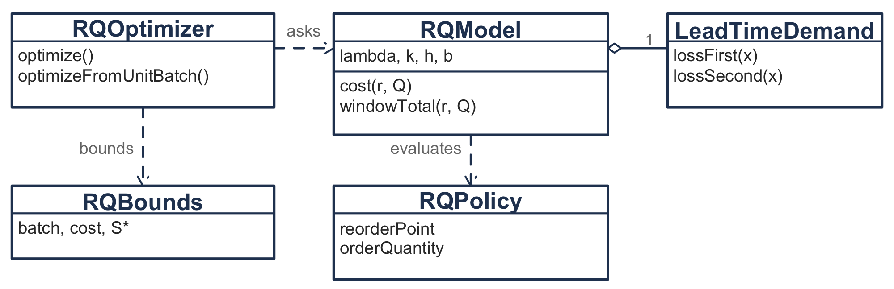
8 Continuous and Periodic Review Systems
NoteLearning objectives
After reading this chapter you should be able to:
- trace the state variables of an \((r, Q)\) policy through a sequence of demands
- explain why the reorder point is compared against the inventory position
- construct the lead-time demand distribution under various demand models
- distinguish the ready rate from the fill rate and say when they coincide
- analyze the base-stock policy as a newsvendor problem
- analyze the \((r, Q)\) policy exactly under Poisson demand
- develop approximate cost models and measure what their assumptions cost
- relate safety stock to the safety factor and the service measure chosen
- account for variability in the lead time itself
- compute policy parameters that meet a stated service target
8.1 One Item, Watched Continuously
Chapter 7 removed the assumption that demand is known, and kept the assumption that there is one decision. This chapter removes the second one. The item is stocked permanently, demand arrives at random forever, and a replenishment decision is available at every instant.
NoteWhere the results in this chapter come from
The policy evaluation of Section 8.4 and Section 8.5, and the optimization that follows them, are drawn from Chapter 6 of Zipkin (2000), which is the definitive treatment. The approximation of Section 8.6 is the classical one, which descends from Hadley and Whitin (1963) and appears in Nahmias and Olsen (2015) and Silver et al. (2016). Results are stated here with their sources; the proofs are in Zipkin (2000) and are not reproduced. Where this book departs from that treatment, it says so.
Two numbers define the policy. Let \(r\) represent the reorder point and let \(Q\) represent the order quantity. The rule is one sentence: whenever the inventory position reaches or falls below \(r\), order \(Q\) units. It is written \((r, Q)\), and it is the policy most stock rooms actually run, under the name of a two-bin system or a min-max when the parameters are set by hand.
Three details of its operation matter later and are easy to skate over.
The position is checked after every demand, including a demand that could not be filled. A demand that is backordered changes the position exactly as a filled one does, so it can trigger an order, and Table 8.2 below has an instance.
Unmet demand is backordered rather than lost. The backorders accumulate and are filled when a replenishment arrives, and we assume they are filled first come first served. Nothing in the performance measures depends on that order, but the waiting time distribution of Section 8.2 does.
The lead time is the interval from placing an order to having it available to fill demand, so it includes receiving and put-away and not only transit.
Recall from Section 1.3 that an inventory system carries more than one level, and that the distinction between them is what makes this policy work.
- \(I(t)\), the units physically on hand.
- \(\mathit{IO}(t)\), the units on order and not yet received.
- \(B(t)\), the units of demand that arrived, were not filled, and are owed.
- \(\mathit{IN}(t) = I(t) - B(t)\), the net inventory, which can be negative.
- \(\mathit{IP}(t) = I(t) + \mathit{IO}(t) - B(t)\), the inventory position.
The policy compares \(r\) against the position and not against what is on the shelf. That choice is the whole of why the policy works, and a reader meeting it for the first time usually has to see it fail before believing it. If the rule watched \(I(t)\), then a system whose shelf is empty and whose order is in transit would order again, and again at the next demand, until the first delivery arrived. Thus, it would order the same shortage several times over. The position counts what is already coming, so an order placed is an order not placed again.
8.1.1 Working the Policy by Hand
Before any expectation is taken, we run the policy on a sequence of demands and track every state variable through it. The example is the utility storeroom of Example 4.5.
Example 8.1 (Twelve events at the storeroom) The storeroom carries a pad-mount transformer. Demand runs at \(\lambda = 45\) units a year and arrives one unit at a time. The supplier quotes a lead time of two months, which the ledger carries as eight weeks. The storekeeper is running \(r = 4\) and \(Q = 5\), and at the start of the observation there are 6 transformers on the shelf, none on order, and nothing owed.
What is stocked? One item, the transformer.
What is the demand process? Random arrivals of one unit each, about 45 a year.
When is inventory reviewed? Continuously. The position is known after every transaction.
What triggers replenishment, and how much? The position reaching \(r = 4\) or below, and the order is for \(Q = 5\).
What happens to unmet demand? It is backordered. A utility crew waits for the transformer rather than buying elsewhere.
What costs are incurred, and when? They are the subject of Section 8.2, and none of them is needed to run the ledger.
Notice that \(r = 4\) is not the policy this chapter will end up recommending for this item. It is set low, so the ledger passes through every state the system can occupy, including one the recommended policy would reach rarely.
Notation. Let \(t\) represent the week, counted from the start of the observation. The ledger carries \(I(t)\), \(\mathit{IO}(t)\), \(B(t)\), \(\mathit{IN}(t)\) and \(\mathit{IP}(t)\) as defined above, each recorded after the event on that row has been processed.
We begin. At \(t = 0\) nothing has happened, so \(I = 6\), \(\mathit{IO} = 0\), \(B = 0\), and both \(\mathit{IN}\) and \(\mathit{IP}\) are 6.
A demand arrives in week 1. There is stock, so it is filled from the shelf and \(I\) falls to 5. Nothing is on order and nothing is owed, so the position falls to 5 as well. Since \(5 > 4\), no order is placed.
A second demand arrives in week 2. The shelf falls to 4 and the position falls to 4 with it. The position has now reached the reorder point, so the storekeeper orders 5 transformers. They will arrive eight weeks later, in week 10. The moment the order is placed, \(\mathit{IO}\) becomes 5 and the position jumps to \(4 + 5 - 0 = 9\).
The table has been updated as follows.
| Week | Event | \(I(t)\) | \(\mathit{IO}(t)\) | \(B(t)\) | \(\mathit{IN}(t)\) | \(\mathit{IP}(t)\) |
|---|---|---|---|---|---|---|
| 0 | start | 6 | 0 | 0 | 6 | 6 |
| 1 | demand | 5 | 0 | 0 | 5 | 5 |
| 2 | demand, order 5 | 4 | 5 | 0 | 4 | 9 |
Demands in weeks 3, 5, 6 and 7 are each filled from the shelf, which falls to 3, 2, 1 and then 0. The position falls with them, to 8, 7, 6 and 5.
Stop at week 7 and look at what the policy does not do. The shelf is empty. Nothing can be filled until the delivery arrives, and the policy does not order, because the position is 5 and \(5 > 4\). That is the case promised above: a rule watching the shelf would order here, and it would be ordering a second five transformers to cover a shortage that the first five already cover. The position knows that and the shelf does not.
The demand in week 8 arrives to an empty shelf and is backordered. Thus, \(I\) stays at 0, \(B\) rises to 1, and the net inventory becomes \(0 - 1 = -1\). The position falls to \(0 + 5 - 1 = 4\), which reaches the reorder point, so a second order for 5 is placed. It will arrive in week 16. Now \(\mathit{IO}\) is 10, and the position returns to \(0 + 10 - 1 = 9\).
The demand in week 9 is backordered too, so \(B\) rises to 2, the net inventory falls to \(-2\), and the position falls to 8.
The first order arrives in week 10. Five units come in and the two backorders are filled first, which is what “backordered” means: the demand was recorded and is owed. Thus, \(B\) returns to 0 and \(I\) becomes \(5 - 2 = 3\). The units still on order fall to 5, and the position is \(3 + 5 - 0 = 8\), unchanged by the arrival.
Notice that last point. A delivery does not change the inventory position. It converts units on order into units on hand, and the position counts both.
Demands in weeks 11 and 13 are filled from the shelf. The completed ledger is Table 8.2.
| Week | Event | \(I(t)\) | \(\mathit{IO}(t)\) | \(B(t)\) | \(\mathit{IN}(t)\) | \(\mathit{IP}(t)\) |
|---|---|---|---|---|---|---|
| 0 | start | 6 | 0 | 0 | 6 | 6 |
| 1 | demand | 5 | 0 | 0 | 5 | 5 |
| 2 | demand, order 5 | 4 | 5 | 0 | 4 | 9 |
| 3 | demand | 3 | 5 | 0 | 3 | 8 |
| 5 | demand | 2 | 5 | 0 | 2 | 7 |
| 6 | demand | 1 | 5 | 0 | 1 | 6 |
| 7 | demand | 0 | 5 | 0 | 0 | 5 |
| 8 | demand backordered, order 5 | 0 | 10 | 1 | -1 | 9 |
| 9 | demand backordered | 0 | 10 | 2 | -2 | 8 |
| 10 | receipt of 5 | 3 | 5 | 0 | 3 | 8 |
| 11 | demand | 2 | 5 | 0 | 2 | 7 |
| 13 | demand | 1 | 5 | 0 | 1 | 6 |
The check. Every row must satisfy \(\mathit{IP}(t) = I(t) + \mathit{IO}(t) - B(t)\), and every row does. Week 8 is the one to verify by hand, since it is the only row on which all three terms are non-zero: \(0 + 10 - 1 = 9\). That check is worth performing on every ledger, because it catches an order recorded in the wrong column immediately.
Interpretation. The storekeeper placed two orders in thirteen weeks and was out of stock for two of them, owing at worst two transformers. Whether that is acceptable is a question about cost and service, and Section 8.2 is where it is asked.
Three properties of the policy are now visible in Table 8.2, and we name them before any of them is used.
The position moves within a band of width \(Q\). It falls one unit at a time from just above \(r + Q\) down to \(r\), at which point an order restores it. That is the structure Section 8.5 turns into a distribution, and it is the reason the exact analysis of this policy is possible at all.
Everything that can go wrong happens during a lead time. Between placing an order and receiving it, nothing the storekeeper does can change the outcome. Thus, the only random quantity the policy is exposed to is the demand over that interval, which is why Section 8.3 is a section of its own.
The shelf and the position answer different questions. The position decides when to order. The shelf decides whether a customer is served. A model that confuses them will get the ordering right and the service wrong, or the reverse.
Section 8.2 gives the quantities a policy is judged by, and they are all averages of the columns of Table 8.2.
8.2 What to Measure
A policy is judged by long-run averages of the quantities in Table 8.2. Each is a time average, and the definitions are those of Section 1.3, restated here because every formula in the chapter is one of them.
- \(\bar{I}\), the average units on hand.
- \(\bar{B}\), the average units backordered.
- \(\overline{\mathit{SO}}\), the proportion of time the shelf is empty.
- \(\overline{\mathit{OF}} = \lambda/Q\), the average number of orders placed per unit time.
\(\overline{\mathit{OF}}\) needs no analysis. Every order is for \(Q\) units and all demand is eventually filled, so orders are placed at the rate demand consumes them. Thus, \(\overline{\mathit{OF}}\) depends on \(Q\) alone, and none of the other three does anything so simple. The technical conditions under which these time averages converge are treated in Chapter 6 of Zipkin (2000).
8.2.1 Five Ways to State a Service Requirement
Service means how well the system is meeting the customer’s requirements, and there is no single measure of it. Five are in common use, and they are not interchangeable.
- The probability of no stockout during a lead time. The system does not stock out during a replenishment lead time if the demand over that lead time is at most the inventory available at its start.
- The proportion of demands met from stock without delay.
- The proportion of time that stock is on hand, or equivalently the proportion of time that none is.
- The expected number of backorders.
- The expected waiting time of a backordered demand.
Notice that (a) counts cycles, (b) counts demands, (c) counts time, and (d) and (e) are not proportions at all. An organization that has agreed on a number without agreeing on which of the five it measures has agreed on nothing.
The rest of this section takes the two pairs that are most often confused: (b) against (c), and (d) against (e). Section 8.7 returns to (a) and (b) as targets a planner sets.
The cost rate follows from Equation 1.15. Let \(C(r, Q)\) represent the relevant cost rate:
\[ C(r, Q) = k\,\frac{\lambda}{Q} + h\,\bar{I} + b\,\bar{B} \tag{8.1}\]
Notice the units of each term. The ordering cost is dollars per order times orders per year. The holding cost is dollars per unit per year times a number of units. The backorder cost is dollars per unit per year times a number of units, so \(b\) charges for how long a demand waits and not merely that it waited. A model that charges a flat \(\pi\) per unit short is a different model, and Section 8.6 gives it.
8.2.2 The Ready Rate Is Not the Fill Rate
Two service measures are used constantly, they are quoted interchangeably in practice, and they are not the same quantity.
- The ready rate \(\overline{\mathit{RR}} = 1 - \overline{\mathit{SO}}\) is the proportion of time that stock is on the shelf.
- The fill rate \(\overline{\mathit{FR}}\) is the proportion of demands filled from the shelf on arrival.
The first averages over the clock and the second averages over customers. In Table 8.2 the shelf was empty from week 7 to week 10 and two of the ten demands were backordered, and there is no reason those two figures should agree.
They agree under one condition. Recall from Section B.3.4 that PASTA says a Poisson arrival finds the system in its time-stationary state. Thus, when demand arrives in a Poisson process the proportion of demands meeting an empty shelf equals the proportion of time the shelf is empty, and
\[ \overline{\mathit{FR}} = \overline{\mathit{RR}} = 1 - \overline{\mathit{SO}} \tag{8.2}\]
Under any other arrival process Equation 8.2 fails, and it fails in the direction that matters. Demand that arrives in bursts is more likely to find the shelf empty than a randomly chosen instant is, because the burst that emptied the shelf is the same burst that is still arriving. Thus, a system reporting a 95% ready rate may be filling well under 95% of its demands.
You should therefore ask of any quoted service figure which average it is, and whether the demand process justifies treating them as one. This book keeps them apart and says which one each formula computes.
8.2.3 A Third Measure, and Why It Is the Same as the Second
An organization that does not think in units thinks in time. How long does a customer wait? Recall from Equation 1.6 that Little’s Law answers this with no distributional assumption at all. Taking the system to be the set of backordered demands,
\[ \overline{W} = \frac{\bar{B}}{\lambda} \tag{8.3}\]
Thus, a target on the average backorder level and a target on the average wait are the same target in different units, and an organization that argues about the two separately is arguing about a unit conversion.
For example, an item with \(\bar{B} = 0.12\) units at \(\lambda = 45\) a year has \(\overline{W} = 0.12/45 = 0.00267\) years, which is
\[ 0.00267 \text{ years} \times \frac{365 \text{ days}}{1 \text{ year}} = 0.97 \text{ days} \]
so the average demand waits about a day. Notice that this is an average over all demands and not over the backordered ones. Most demands wait no time at all, and the few that wait, wait much longer than a day.
8.2.4 Service Targets Are Costs You Declined to Estimate
Equation 8.1 needs \(b\), and \(b\) is the parameter no ledger contains. The usual response is to drop it and impose a service target instead, which Section 8.7 takes up properly.
Imposing a service target does not remove \(b\) from the model. Recall from Section 4.4.3 that a firm’s observed order quantities imply a ratio of its own cost parameters whether or not the firm has ever estimated them. The same argument runs here. A service target is not an escape from \(b\); it is a statement about \(b\) made without saying so. Section 8.7 recovers the implied value and asks whether anyone believes it.
Section 8.3 takes up the one random quantity all four averages depend on.
8.3 Lead Time Demand
Section 8.1 observed that the policy is exposed to exactly one random quantity. Let \(D(L)\) represent the lead time demand, the demand that arrives between placing an order and receiving it, and let \(\theta = E[D(L)]\) represent its mean. Everything in the rest of this chapter is a functional of the distribution of \(D(L)\), and nothing in it is a functional of anything else.
That is a stronger statement than it looks. Two systems with entirely different demand patterns and lead times, whose lead time demand distributions happen to coincide, have identical performance under the same policy. Thus, the modeling effort belongs on \(D(L)\), and the choice of formula for \(\bar{B}\) or \(\overline{\mathit{FR}}\) is a detail by comparison.
8.3.1 Two Ways to Build It
The period based characterization divides time into buckets. Let \(D_{i}\) represent the demand in period \(i\) and let \(L\) be counted in whole periods. Then
\[ D(L) = \sum_{i=1}^{L}D_{i} \tag{8.4}\]
which is the random sum of Equation B.26 with the lead time as the count. It is the natural form when the data arrive as a history of weekly or monthly totals, which is how Section 7.3 received them.
The event based characterization counts transactions. Let \(N(L)\) represent the number of demand events in the lead time and let \(D_{i}\) be the size of the \(i\)th one. Then
\[ D(L) = \sum_{i=1}^{N(L)}D_{i} \tag{8.5}\]
which is the compound process of Equation B.25. It is the natural form for a slow mover, where a bucket is mostly zeros and the informative quantities are how often a demand occurs and how large it is.
Notice that the two are the same object reached from different data. You should choose between them by asking which one the organization’s records can actually support, and not by which is more elegant.
Most organizations hold demand statistics for some standard bucket, a week or a month, and not for a lead time. Let \(\sigma_{D}\) represent the standard deviation of demand in one period. We take Equation 8.4 with a constant lead time of \(L\) periods and independent period demands, and Equation B.11 gives
\[ E[D(L)] = \lambda L, \qquad \mathit{Var}[D(L)] = \sigma_{D}^{2}L, \qquad \sigma_{D(L)} = \sigma_{D}\sqrt{L} \tag{8.6}\]
The standard deviation scales with the square root of the lead time and the mean scales with the lead time itself. Thus, doubling a lead time doubles the expected requirement and multiplies its standard deviation by only 1.414, which is why a longer lead time raises the reorder point more than it raises the safety stock. It is also the most common place to go wrong, because the temptation is to multiply the standard deviation by \(L\).
8.3.2 The Moments, and the Three Cases
Equation B.30 gives the moments of Equation 8.4 directly:
\[ E[D(L)] = E[L]\,E[D], \qquad \mathit{Var}[D(L)] = E[L]\,\mathit{Var}[D] + \mathit{Var}[L]\,\big(E[D]\big)^{2} \]
and Equation B.23 gives them for Equation 8.5. Both reduce to the same three cases, which the literature treats as three separate models and which are one formula with terms switched off.
| Case | What is random | \(E[D(L)]\) | \(\mathit{Var}[D(L)]\) |
|---|---|---|---|
| 1 | Demand only, lead time constant at \(L\) | \(L\,E[D]\) | \(L\,\mathit{Var}[D]\) |
| 2 | Lead time only, demand constant at rate \(\lambda\) | \(\lambda E[L]\) | \(\lambda^{2}\mathit{Var}[L]\) |
| 3 | Both | \(E[L]E[D]\) | \(E[L]\mathit{Var}[D] + \mathit{Var}[L](E[D])^{2}\) |
Compute the two terms of case 3 separately, every time. They say different things and they are acted on differently. The first is what the customer does and the second is what the supplier does, and a total that hides the split cannot tell you which one to spend money on.
Notice what Table 8.3 does not give you. It gives two moments. Every model in this chapter needs a distribution, and two moments do not determine one. Thus, the procedure in practice has three steps, in this order:
- Compute \(E[D(L)]\) and \(\mathit{Var}[D(L)]\) from the case that applies.
- Choose a family, using Equation C.1 and the selection rules of Section C.4.2. Poisson when the ratio is near one, negative binomial when it is above one, and the gamma when the counts are large enough that a continuous model is safe. Section 8.6.2 says why the normal is not on that list.
- Compute the performance measures and set \(r\) and \(Q\) from that distribution.
Step 2 is a choice and not a finding, and Table 7.6 measured what such a choice costs on a decision of this kind. Where the answer matters, carry two families through step 3 and report the spread.
Example 8.2 (Lead time demand for the transformer) Take the transformer of Example 8.1, with \(\lambda = 45\) units a year arriving one at a time. We compute \(D(L)\) under two descriptions of the lead time.
Notation. Let \(L\) represent the lead time in years and let \(D(L)\) represent the demand over it. Demand events arrive in a Poisson process, so the count over a fixed interval is Poisson by Equation B.15, and each event is for one unit.
Case 1, the lead time is a constant two months. Then
\[ \theta = \lambda L = \frac{45 \text{ units}}{1 \text{ year}} \times \frac{2 \text{ months}}{1} \times \frac{1 \text{ year}}{12 \text{ months}} = 7.5 \text{ units} \]
and since demand is Poisson and the interval is fixed, \(D(L)\) is Poisson with mean 7.5. Thus, \(\mathit{Var}[D(L)] = 7.5\) as well, and the standard deviation is \(\sqrt{7.5} = 2.74\) units.
Case 3, the lead time averages two months with a standard deviation of one month. Now \(E[L] = 1/6\) year and \(\mathit{Var}[L] = (1/12)^{2} = 1/144\). The mean is unchanged at 7.5 units, and
\[ \mathit{Var}[D(L)] = \lambda E[L] + \lambda^{2}\mathit{Var}[L] = 7.5 + 2025\left(\tfrac{1}{144}\right) = 7.5 + 14.0625 = 21.5625 \]
so the standard deviation is 4.64 units.
Read the split. The demand contributes 7.5 of the 21.5625 and the lead time contributes 14.0625. Thus, 65% of the variance the safety stock must cover comes from the supplier, on an item whose demand nobody can control and whose lead time a purchasing department could negotiate. That is the reading Section B.5.3 asked for, on this chapter’s own item.
Which family. The variance to mean ratio is \(21.5625/7.5 = 2.875\), which Equation C.1 sends to the negative binomial. Matching moments by Equation 7.3 gives \(\hat{p} = 7.5/21.5625 = 0.3478\) and \(\hat{r} = 7.5^{2}/(21.5625 - 7.5) = 4.00\).
The check, and it is a better one than a moment match. Suppose the lead time is not merely variable but is built of four independent stages averaging half a month each, which is what a purchase order, a production slot, a shipment and a receiving inspection look like. Then \(L\) is Erlang with shape 4 and rate \(\mu = 24\) a year, so \(E[L] = 4/24 = 1/6\) year and \(\mathit{Var}[L] = 4/24^{2} = 1/144\), exactly the figures above. By Equation B.19 the lead time demand is then exactly negative binomial with \(r = 4\) and
\[ p = \frac{\mu}{\lambda + \mu} = \frac{24}{45 + 24} = \frac{24}{69} = 0.3478 \]
The moment match and the transform agree to four figures, and they are not the same calculation. Thus, the negative binomial is what the model gives here rather than an assumption.
8.3.3 Getting the Distribution in Practice
Step 2 above assumed a family was available to choose. Three routes produce one, and they are not equally practical.
Observe it directly. Record the demand over each realized lead time and fit the resulting sample as Section 7.3 fits any sample. It is the only route that needs no assumption about independence, and it needs a long history of lead times, which most organizations do not keep.
Simulate it. Sample period demands and lead times from their own fitted distributions and accumulate. It handles dependence between the two, which the moment formulas cannot, and it produces an empirical distribution whose loss functions come from Section C.3.2.
Match moments to a family. Compute the two moments from Table 8.3 and choose a family by Section C.4.2. This is what is actually done, because it needs only what an organization already has.
The third route is what the rest of this chapter assumes has been done. The demand process now enters every formula only through the distribution of \(D(L)\), which is the point Zipkin (2000) makes at the head of his own treatment: two systems whose lead time demand distributions agree have identical performance under the same policy, whatever produced them.
Section 8.4 now takes the simplest possible policy, in which the position never moves at all.
8.4 The Base-Stock Model
Set \(Q = 1\). Every demand of one unit triggers an order for one unit, so the policy replenishes one for one and the inventory position never moves. This is the base-stock policy, and it is where Zipkin (2000) begins for the same reason we do: with the position held still, everything else follows in three lines.
Notation. Let \(S\) represent the base-stock level, the value at which the inventory position is held. Let \(r = S - 1\) represent the reorder point, since the position reaches \(r\) exactly when one unit has been demanded and an order for that unit is then placed. Let \(\theta = E[D(L)]\) represent the mean lead time demand and \(\sigma\) its standard deviation. Let
\[ \mathit{ss} = r - \theta \tag{8.7}\]
represent the safety stock, the reorder point in excess of expected lead time demand.
Safety stock is often glossed as “the expected inventory on hand when a replenishment arrives”. That reading is correct only when at most one order is outstanding, which is assumption (i) of Section 8.6. It is not correct here. Under one-for-one replenishment the expected number of outstanding orders is \(\theta\) itself, which for the item below is 7.5, so there are almost always several. Treat Equation 8.7 as a definition and not as an interpretation.
Notice that \(S\) and \(r\) carry the same information and the literature uses both. This book states base-stock results in \(S\) and \((r, Q)\) results in \(r\), and Equation 8.7 is where the two meet.
It is not a curiosity. One-for-one replenishment is what stock rooms run for items that are expensive, slow moving and critical, which is exactly the profile of the transformer, and it is the standard policy for military and utility spare parts. It is also the building block for everything that follows: Section 8.5 obtains the general case by averaging base-stock results over a range of \(S\).
Why the ordering cost disappears is this. Under \(Q = 1\) the order rate is \(\overline{\mathit{OF}} = \lambda\) whatever \(S\) is, so \(k\lambda\) is a constant added to every alternative. Recall from Section 1.4.1 that a constant added to every alternative cannot change which alternative is least. Thus, \(k\) drops out of the choice of \(S\), exactly as it dropped out of Chapter 7. It does not drop out of the comparison between this policy and one with \(Q > 1\), and Section 8.5 is where that bill arrives.
8.4.1 Three Lines of Derivation
Under one-for-one replenishment the outstanding orders are the lead time demand. An order is placed at the instant of every demand, so the orders outstanding now are exactly those triggered by the demands of the last \(L\) time units. Thus,
\[ \mathit{IO} = D(L) \tag{8.8}\]
We substitute that into \(\mathit{IP} = I + \mathit{IO} - B\) and use \(\mathit{IP} = S\) throughout, which gives
\[ S = I + D(L) - B, \qquad\text{so}\qquad \mathit{IN} = I - B = S - D(L) \tag{8.9}\]
Equation 8.9 is the whole model. Everything else is read off it, using \(I = (\mathit{IN})^{+}\) and \(B = (-\mathit{IN})^{+}\) from Section 1.3, and the loss functions of Section C.3.
The expected backorder level is the expected amount by which demand exceeds the level, which is the first order loss function evaluated at \(S\):
\[ \bar{B}(S) = E\left[(D(L) - S)^{+}\right] = \sum_{x \ge S}(x-S)g(x) = G^{1}(S) \tag{8.10}\]
For hand work from a table of the distribution function, Equation C.13 gives the form to use:
\[ \bar{B}(S) = \theta - \sum_{x=0}^{S-1}G^{0}(x) \tag{8.11}\]
Notice the upper limit. It is \(S-1\) and not \(S\), because \(G^{1}(S)\) is the tail sum of \(G^{0}\) from \(S\) upward and the subtraction removes the terms strictly below it. Getting that limit wrong understates the backorder level, and on the item worked below it would report 0.0823 backorders where the answer is 0.1616.
The expected on-hand follows from Equation 7.9 without any new work:
\[ \bar{I}(S) = E\left[(S - D(L))^{+}\right] = S - \theta + G^{1}(S) \tag{8.12}\]
and the ready rate is the probability the net inventory is positive, that is the probability demand over the lead time is at most \(S - 1\):
\[ \overline{\mathit{RR}}(S) = P\{D(L) \le S - 1\} = G(S-1) \tag{8.13}\]
Under Poisson demand Equation 8.2 makes that the fill rate too.
Notice that Equation 8.12 is not an approximation. The expected on-hand exceeds \(S - \theta\) by exactly the expected backorder level, which is the statement that stock you are short of is stock you are not holding.
8.4.2 Choosing the Level
We substitute into Equation 8.1 and drop the constant \(k\lambda\), which gives
\[ C(S) = h\left(S - \theta + G^{1}(S)\right) + b\,G^{1}(S) = h(S - \theta) + (h + b)G^{1}(S) \tag{8.14}\]
which is Equation 7.10 with \(c_{o} = h\) and \(c_{u} = b\). Thus, the base-stock problem is the newsvendor problem, with the holding rate playing the overage cost and the backorder rate playing the underage cost, and the answer is the critical ratio of Equation 7.12:
\[ S^{*} = \min\left\{S : G(S) \ge \frac{b}{b + h}\right\} \tag{8.15}\]
using the discrete rule of Equation 7.13, since \(S\) is a whole number of units.
Chapter 7 solved a problem with one period and no future; this one has an infinite horizon and a permanent stock. They have the same answer because both trade one unit too many against one unit too few, and in a one-for-one system the trade is made afresh at every demand.
Example 8.3 (One for one at the storeroom) The storeroom of Example 8.1 decides to stock the transformer one for one.
What is stocked? One item, the pad-mount transformer.
What is the demand process? Poisson at \(\lambda = 45\) units a year, one unit at a time.
When is inventory reviewed? Continuously.
What triggers replenishment, and how much? Every demand, for one unit.
What happens to unmet demand? It is backordered.
What costs are incurred, and when? From Table 4.5 the unit cost is \(c = \$3{,}800\) and the carrying charge is \(\gamma = 0.25\) a year, so \(h = 0.25(3800) = \$950\) per unit per year. The utility judges that a transformer owed to a waiting crew costs $8,550 a year in rescheduled work and reliability penalties, so \(b = \$8,550\) per unit per year.
Notation. Let \(S\) represent the base-stock level in units, and let \(D(L)\) be Poisson with \(\theta = 7.5\) units from case 1 of Example 8.2.
The critical ratio.
\[ \frac{b}{b + h} = \frac{8550}{8550 + 950} = \frac{8550}{9500} = 0.90 \]
The level. Walk the Poisson distribution function down the \(\lambda = 7.5\) column of Table D.3. Notice that \(G(10) = 0.8622\) falls short of 0.90 and \(G(11) = 0.9208\) clears it. Thus, \(S^{*} = 11\) transformers.
The consequences. From Equation 8.10, \(\bar{B} = G^{1}(11) = 0.1616\) units. From Equation 8.12, \(\bar{I} = 11 - 7.5 + 0.1616 = 3.6616\) units. From Equation 8.13 the fill rate is \(G(10) = 0.8622\).
The cost. By Equation 8.14,
\[ C(11) = 950(3.6616) + 8550(0.1616) = 3478.48 + 1381.35 = \$4{,}859.83 \text{ a year} \]
The check. The critical ratio is a shortcut, so we cost the neighbors directly and confirm the minimum is where the rule put it.
| \(S\) | 9 | 10 | 11 | 12 | 13 |
|---|---|---|---|---|---|
| \(\bar{I}\) | 2.0229 | 2.7993 | 3.6616 | 4.5823 | 5.5397 |
| \(\bar{B}\) | 0.5229 | 0.2993 | 0.1616 | 0.0823 | 0.0397 |
| \(C(S)\) | $6,392.69 | $5,218.57 | $4,859.83 | $5,057.03 | $5,601.71 |
Two routes, one answer.
Interpretation. The storeroom holds about three and a half transformers on average, is out of stock about 14% of the time, and owes about 0.16 of a transformer at any moment. By Equation 8.3 the average demand waits \(0.1616/45 = 0.0036\) years, or 1.3 days.
The assumption to examine. We dropped \(k\) because \(Q = 1\) made it a constant. At \(\overline{\mathit{OF}} = \lambda = 45\) orders a year and \(k = \$220\) an order, that constant is \(45(220) = \$9{,}900\) a year, which is more than twice the cost we just minimized. Thus, the policy is well chosen given \(Q = 1\), and \(Q = 1\) has not been justified at all.
That last paragraph is the argument for the next section. One-for-one replenishment is right when an order is nearly free or a unit is nearly priceless, and the transformer is neither.
8.5 General Batch Sizes
Now let \(Q\) be any positive whole number. The inventory position no longer sits still; it walks down through a band and jumps back to the top. What makes the policy solvable is that we know exactly how it is distributed.
8.5.1 Where the Position Sits
Look again at the position column of Table 8.2. It takes the values 9, 8, 7, 6, 5 and then returns to 9. With demands of one unit, the position visits each of the \(Q\) values \(r+1, r+2, \ldots, r+Q\) once per cycle and spends the same expected time at each.
That is the result the whole section rests on. In steady state,
\[ \mathit{IP} \sim \text{Uniform}\{r+1, r+2, \ldots, r+Q\}, \qquad \text{independent of } D(L) \tag{8.16}\]
The position at the moment an order is placed is determined by demands that have already happened, and \(D(L)\) is demand that has not yet happened. Thus, the two are functions of disjoint stretches of the demand process, and a process with independent increments makes them independent.
We combine Equation 8.16 with the relation Equation 8.9 already used,
\[ \mathit{IN} = \mathit{IP} - D(L) \tag{8.17}\]
and that gives everything. We condition on the position, apply the base-stock results of Section 8.4, and average over the \(Q\) values. That is Equation B.7 doing the work, and it is the same move Section B.1.3 described in general.
8.5.2 The Four Measures
We average Equation 8.10 over the position, which gives
\[ \bar{B}(r, Q) = \frac{1}{Q}\sum_{j=r+1}^{r+Q}G^{1}(j) = \frac{1}{Q}\left[G^{2}(r) - G^{2}(r+Q)\right] \tag{8.18}\]
where the second form is Equation C.12 collapsing the sum. Averaging Equation 8.13 the same way, we obtain
\[ \overline{\mathit{RR}}(r, Q) = \frac{1}{Q}\sum_{j=r+1}^{r+Q}G(j-1) = 1 - \frac{1}{Q}\left[G^{1}(r) - G^{1}(r+Q)\right] \tag{8.19}\]
The expected on-hand needs no averaging at all. By Equation 8.17 and Equation 8.16, \(E[\mathit{IN}] = \tfrac{1}{2}(Q+1) + r - \theta\), and since \(I = \mathit{IN} + B\),
\[ \bar{I}(r, Q) = \frac{Q+1}{2} + r - \theta + \bar{B}(r, Q) \tag{8.20}\]
and \(\overline{\mathit{OF}} = \lambda/Q\) as before. Four formulas, and every one of them is exact.
Notice what is not assumed. Nothing here supposes that at most one order is outstanding, that backorders are rare, or that lead time demand is continuous. Section 8.6 makes all three of those assumptions and Equation 8.18 is the yardstick that prices them.
Two sanity checks travel with these formulas. Setting \(Q = 1\) collapses every formula to Section 8.4, since the sum has one term at \(j = r+1 = S\). The \(\tfrac{1}{2}(Q+1)\) in Equation 8.20 is the average of the integers \(1\) through \(Q\), which is the discrete counterpart of the \(Q/2\) that Section 3.1 obtained for a deterministic cycle. Thus, the classical average cycle stock is still in there, raised by half a unit because units are whole and by \(\bar{B}\) because shortages are possible.
8.5.3 The Variance of the Backorder Level
Equation 8.18 is a mean, and a mean of a quantity that is zero most of the time and occasionally large. Its spread deserves reporting, and averaging Equation C.21 over the position we obtain
\[ E\left[B^{2}\right] = \frac{1}{Q}\left\{2\left[G^{3}(r) - G^{3}(r+Q)\right] + \left[G^{2}(r) - G^{2}(r+Q)\right]\right\} \tag{8.21}\]
so that \(\mathit{Var}[B] = E[B^{2}] - \bar{B}^{2}\). Notice that this is where the third order loss function of Section C.3.6 is needed and the first place in the book that needs it. The mean backorder level collapses a sum of first order functions into a difference of second order ones; the second moment collapses a sum of second order functions into a difference of third order ones.
Example 8.4 (Evaluating a policy for the transformer) Example 8.3 left \(Q = 1\) unjustified. We now choose both parameters.
Notation. As in Example 8.3: \(\lambda = 45\) a year, \(k = \$220\) an order, \(h = \$950\) per unit per year, \(b = \$8,550\) per unit per year, and \(D(L)\) Poisson with \(\theta = 7.5\).
A starting quantity. Equation 3.17 ignores uncertainty entirely, and is still the right place to start because Section 3.7 showed its cost curve is flat:
\[ Q^{*} = \sqrt{\frac{2k\lambda}{h}} = \sqrt{\frac{2(220)(45)}{950}} = \sqrt{20.84} = 4.57 \to 5 \text{ units} \]
The reorder point. With \(Q = 5\) fixed we evaluate Equation 8.1 across \(r\), using Equation 8.18, Equation 8.19 and Equation 8.20. Every column is exact.
| \(r\) | \(\bar{B}\) | \(\overline{\mathit{FR}}\) | \(\bar{I}\) | Ordering | Holding | Backorder | Total |
|---|---|---|---|---|---|---|---|
| 7 | 0.3854 | 0.7492 | 2.8854 | $1,980 | $2,741 | $3,295 | $8,016 |
| 8 | 0.2212 | 0.8357 | 3.7212 | $1,980 | $3,535 | $1,891 | $7,406 |
| 9 | 0.1202 | 0.8990 | 4.6202 | $1,980 | $4,389 | $1,028 | $7,397 |
| 10 | 0.0619 | 0.9417 | 5.5619 | $1,980 | $5,284 | $529 | $7,793 |
| 11 | 0.0302 | 0.9683 | 6.5302 | $1,980 | $6,204 | $258 | $8,442 |
The answer. \(r = 9\) and \(Q = 5\), costing $7,397 a year at a fill rate of 0.8990.
The check. At \(r = 9\), Equation 8.20 must reproduce the table: \(\bar{I} = (5+1)/2 + 9 - 7.5 + 0.1202 = 3 + 1.5 + 0.1202 = 4.6202\) units, which it does. That check is worth performing every time, because the \(\tfrac{1}{2}(Q+1)\) term is the one most often written as \(Q/2\).
The spread. From Equation 8.21, \(E[B^{2}] = 0.3533\), so \(\mathit{Var}[B] = 0.3533 - 0.1202^{2} = 0.3388\) and the standard deviation of the backorder level is 0.582 units. Notice that the standard deviation is nearly five times the mean. Thus, the average backorder level of 0.12 units is not a typical state; the typical state is zero backorders, punctuated by occasions of several. Reporting the mean alone would describe a situation that never occurs.
The comparison that matters. Example 8.3 held \(Q = 1\) and cost $4,859.83 a year in holding and backorders, plus \(45(220) = \$9{,}900\) a year in ordering that the section set aside. Its true total is $14,760.
| Policy | Ordering | Holding | Backorder | Total |
|---|---|---|---|---|
| Base stock, \(S = 11\) | $9,900 | $3,478 | $1,381 | $14,760 |
| \((r, Q) = (9, 5)\) | $1,980 | $4,389 | $1,028 | $7,397 |
Ordering five at a time halves the cost of running this item, and it improves the fill rate from 0.8622 to 0.8990 while doing it. Thus, the base-stock policy was not merely suboptimal here, it was worse on both counts at once.
Interpretation, and the honest limit. One-for-one replenishment earns its place when \(k\) is small enough that \(k\lambda\) is not the dominant term. Here \(k\lambda = \$9{,}900\) against a total of $14,760, so it dominated completely. An item with the same demand and a $10 ordering cost would tell the opposite story.
8.5.4 When the Lead Time Is Random
Everything above took the lead time as a constant, and Section 8.3 did not. That section computed \(D(L)\) with a random lead time and case 3 of Table 8.3 gives its moments, so the two have to be reconciled before the formulas are used that way.
The lead time enters Equation 8.18, Equation 8.19 and Equation 8.20 only through the distribution of \(D(L)\). Nothing in the derivation asked whether \(L\) was random. Thus, a random lead time is the same model with a different lead time demand distribution rather than a new model, and every formula in this section stands unaltered once that distribution is supplied.
One condition makes that true. Equation 8.17 says the net inventory is the position less the demand over a lead time, and that holds because every order placed before the current one has already arrived. Thus, orders must be received in the sequence they were placed. Where a supplier can deliver a later order ahead of an earlier one, Equation 8.17 fails and the analysis above does not apply.
Notice that this is a statement about the supply arrangement and not about the policy. A shipment on a fixed route preserves the sequence. A pool of suppliers any of whom may fill an order does not.
Under one-for-one replenishment with orders that may cross, Section B.3.3 shows the number outstanding is Poisson with mean \(\lambda E[L]\) whatever the lead time distribution is, so its variance does not enter at all. Notice how far that is from the section below, where the variance does most of the damage. The two describe different kinds of randomness, and Section B.3.3 says which is which.
What the variability costs is measured next. Take the transformer with the two descriptions of the supplier from Example 8.2, both averaging two months, and optimize \(r\) and \(Q\) jointly under each.
| The supplier | \(\mathit{Var}[D(L)]\) | \((r, Q)^{*}\) | Cost |
|---|---|---|---|
| Two months exactly | 7.5 | \((8, 7)\) | $7,225.15 |
| Two months on average, standard deviation one month | 21.5625 | \((10, 8)\) | $11,079.73 |
The uncertainty costs $3,854.58 a year, which is 53% more than running the item against a reliable supplier. Recall from Example 8.2 that 65% of the variance is the lead time’s doing. Thus, Table 8.7 is the number to put in front of a purchasing department that is choosing between a cheaper supplier and a predictable one.
Notice also the direction the policy moves. Both \(r\) and \(Q\) rise, \(r\) because the tail of \(D(L)\) is heavier and \(Q\) because a longer, more variable exposure makes each cycle more expensive to start. That is the same effect Equation 8.24 will make explicit.
Everything in this section is exact, computable by hand from Table D.4 and Table D.5, and free of the assumptions the classical treatment makes. Section 8.6 now gives that classical treatment, and uses Table 8.5 to price what its assumptions cost.
8.6 The Classical Approximation
Section 8.5 evaluates a policy without approximating anything, and it is not the model most textbooks give first. The classical treatment replaces it with a cost expression that can be differentiated, and that expression is what is implemented in nearly every spreadsheet and planning package in service. It descends from Hadley and Whitin (1963) and appears in Nahmias and Olsen (2015) and Silver et al. (2016). We give it here, and then we price it, which is the reason it comes second in this book and not first.
8.6.1 Twelve Assumptions
The approximation rests on the following. Several are so ordinary that they are never stated, which is why they are listed.
- The system is under continuous review, so that whenever a demand or a replenishment occurs the inventory position is immediately determined.
- There is a fixed ordering cost \(k\), in dollars per order.
- There is a shortage cost \(\pi\), measured per unit of backordered demand, in dollars per unit.
- The unit cost is \(c\), in dollars per unit.
- The holding cost is \(h\), in dollars per unit per unit time. If a carrying charge \(i\) is given instead, then \(h = ic\).
- The lead time \(L\) is fixed and positive.
- Demand is stationary and characterized by an expected rate \(\lambda\), in units per unit time.
- Lead time demand \(D(L)\) is a continuous random variable with density \(g(x)\) and distribution function \(G(x)\), mean \(\theta = \lambda L\) and variance \(\sigma^{2}\). Which continuous family is a separate question, and Section 8.6.2 answers it.
- There is never more than one outstanding order at any point in time. This ensures that whenever the reorder point is reached there are no orders outstanding, and therefore that lead time demand never exceeds \(Q\).
- A cycle is the time between the receipt of two consecutive replenishment orders.
- The reorder point \(r\) is non-negative, so it is reached while \(I(t)\) is still positive. Thus, there are no backorders at the moment the reorder point is reached, and \(\mathit{IP}(t) = I(t)\) there.
- The expected number of backorders at a random point in a cycle is very small compared with the expected amount on hand.
Most are harmless or are removed later. Assumption (f) is what Section 8.5.4 lifted, and (d) was the business of Section 3.8.
Three of them do the damage, and they do it in two different ways. Assumptions (i), (k) and (l) drop terms from a cost expression that Section 8.5 computes exactly. Assumption (h) replaces the distribution of \(D(L)\) itself. Those are separate errors, they can run in opposite directions, and the examples below price them separately for that reason.
8.6.2 Which Continuous Family
Assumption (h) requires a continuous distribution for a quantity that is a count. The family it is most often given is the normal, and that choice is hard to defend. Table C.1 prices its central defect: the support is the whole real line, so a normal model assigns positive probability to negative demand, and the amount is governed by the coefficient of variation. Below about \(c_{X} = 0.3\) the defect is invisible and past \(c_{X} = 1\) a sixth of the distribution is nonsense. Lead time demand for a slow-moving item routinely sits in the second range. Rossetti and Ünlü (2011) examine the question directly and find the normal a poor model of lead time demand across the conditions that matter.
This book uses the gamma. It is strictly positive, it accommodates any coefficient of variation, and Table C.5 and Table C.6 give its loss functions in closed form. We match the two moments of Table 8.3, which gives
\[ \alpha = \frac{\theta^{2}}{\sigma^{2}}, \qquad \beta = \frac{\sigma^{2}}{\theta} \tag{8.22}\]
which is Section C.4.2 applied to lead time demand.
Notice that this is a choice about assumption (h) and not a repair of it. A continuous family approximating a small count is still approximating a small count, and Section 8.5 does not have to.
Assumption (i) has a diagnostic you already have. The expected number of orders outstanding at any moment is the lead time demand divided by the order quantity, \(\theta/Q\). Thus, (i) asks for \(\theta/Q\) comfortably below one. Read it against Equation 8.18: (i) says \(D(L)\) never exceeds \(Q\), which is the claim that \(G^{1}(r+Q)\) is zero, and \(G^{1}(r+Q)\) is exactly the term the approximation is about to drop.
8.6.3 The Cost Model
We take the three cost terms one at a time. The purchase cost is \(\lambda c\) and does not depend on the policy, so by Section 1.4.1 it is omitted.
Ordering. Orders are placed at the rate demand consumes them, so the expected ordering cost per unit time is \(k\lambda/Q\), as in Section 8.2.
Shortage. The shortage cost per unit time is the expected shortage per cycle, times cycles per unit time, times the cost of a unit short:
\[ \frac{\text{units short}}{\text{cycle}} \times \frac{\text{cycles}}{\text{time}} \times \frac{\text{dollars}}{\text{unit short}} = \frac{\text{dollars}}{\text{time}} \]
By assumption (k), \(I(t) = r\) when the reorder point is reached, so a shortage occurs in a cycle exactly when \(D(L)\) exceeds \(r\), and its size is \(D(L) - r\). That expectation is the first order loss function, so the shortage cost per unit time is \(\pi(\lambda/Q)G^{1}(r)\).
Holding. Assumption (l) sets \(E[B] \approx 0\), so \(E[I] \approx E[\mathit{IN}]\). The safety stock \(\mathit{ss} = r - \theta\) of Equation 8.7 is what remains on hand when the order arrives, and \(Q\) more arrive with it, so the level cycles between \(\mathit{ss}\) and \(\mathit{ss} + Q\) and averages \(Q/2 + r - \theta\). The holding cost per unit time is \(h(Q/2 + r - \theta)\).
Putting the three together, we have
\[ C(r, Q) \approx k\frac{\lambda}{Q} + h\left(\frac{Q}{2} + r - \theta\right) + \pi\frac{\lambda}{Q}G^{1}(r) \tag{8.23}\]
Notice that Equation 8.23 is Equation 3.17 with two terms added, and that the \(Q/2\) is the deterministic cycle stock of Section 3.1 unchanged. That is the sense in which this is the classical model: the uncertainty has been pushed entirely into \(r\).
8.6.4 Two Conditions, Solved Together
Equation 8.23 is differentiable in both arguments. We set the partial derivatives to zero and use \(dG^{1}/dr = -G^{0}(r)\) from Equation C.23, which gives
\[ Q = \sqrt{\frac{2\lambda\left[k + \pi G^{1}(r)\right]}{h}}, \qquad G^{0}(r) = \frac{Qh}{\pi\lambda} \tag{8.24}\]
Read the first one. It is the economic order quantity with the ordering cost inflated by \(\pi G^{1}(r)\), the expected shortage cost per cycle. Uncertainty raises the order quantity by making each cycle more expensive to begin, which is the whole classical result in one sentence.
Read the second one. It says the probability of a stockout during a lead time is \(Qh/(\pi\lambda)\), so for a given \(Q\) the reorder point is a quantile:
\[ r = G^{-1}\!\left(1 - \frac{Qh}{\pi\lambda}\right) \tag{8.25}\]
Neither equation solves alone. Substituting the first into the second, we obtain the root equation
\[ G(r) + \frac{h}{\pi\lambda}\sqrt{\frac{2\lambda\left[k + \pi G^{1}(r)\right]}{h}} - 1 = 0 \tag{8.26}\]
which can be solved directly, or the pair can be iterated: start from the economic order quantity, solve for \(r\), put that \(r\) back, and repeat until \(Q\) stops moving.
8.6.5 The Backorder-Cost Variant
Where the shortage is charged as \(b\) per unit per unit time rather than \(\pi\) per unit short, the shortage term becomes \(b\bar{B}\) with \(\bar{B} \approx G^{2}(r)/Q\), which is Equation 8.18 with the far tail dropped. The same two derivatives then give
\[ Q = \sqrt{\frac{2\left[k\lambda + b\,G^{2}(r)\right]}{h}}, \qquad G^{1}(r) = \frac{Qh}{b} \tag{8.27}\]
Use whichever matches the cost the organization can defend. Recall from Section 8.2 that \(b\) charges for how long a customer waits and \(\pi\) charges for the fact that they waited, and that these are different claims about the world rather than different units for one claim.
Example 8.5 (The approximation on a fast-moving item) From Table 4.5 the storeroom’s compression connector has \(\lambda = 6{,}000\) a year, \(c = \$3.40\) and \(k = \$27.50\), so by assumption (e) and the storeroom’s carrying charge of 0.25 a year, \(h = 0.25(3.40) = \$0.85\) per unit per year. The supplier quotes two weeks.
What is stocked? One item, the compression connector.
What is the demand process? Poisson at 6,000 units a year.
When is inventory reviewed? Continuously.
What triggers replenishment, and how much? The position reaching \(r\), and the order is for \(Q\).
What happens to unmet demand? It is backordered, and a crew waits.
What costs are incurred, and when? \(k = \$27.50\) an order, \(h = \$0.85\) per unit per year, and the utility puts the cost of a connector short at \(\pi = \$8.50\), two and a half times what the part is worth, because the crew is idle either way.
Notation. Let \(D(L)\) represent demand over the two-week lead time, so
\[ \theta = \lambda L = \frac{6{,}000 \text{ units}}{1 \text{ year}} \times \frac{2 \text{ weeks}}{1} \times \frac{1 \text{ year}}{52 \text{ weeks}} = 230.77 \text{ units} \]
and \(\sigma = \sqrt{230.77} = 15.19\) units, since the count is Poisson. Assumption (h) asks us to treat \(D(L)\) as continuous, and Equation 8.22 gives the gamma to treat it as:
\[ \alpha = \frac{230.77^{2}}{230.77} = 230.77, \qquad \beta = \frac{230.77}{230.77} = 1.00 \]
Notice that matching a gamma to a Poisson always returns \(\beta = 1\) and \(\alpha = \theta\), since the two moments are equal. The loss functions come from Table C.5.
The iteration. Start at \(Q = \sqrt{2(6000)(27.50)/0.85} = 623.09\), and solve \(G^{0}(r) = Qh/(\pi\lambda)\) for \(r\) by inverting the gamma distribution function.
| Pass | \(G^{0}(r) = Qh/(\pi\lambda)\) | \(r\) | \(G^{1}(r)\) | new \(Q\) |
|---|---|---|---|---|
| 1 | 0.010385 | 267.33 | 0.0599 | 628.83 |
| 2 | 0.010481 | 267.28 | 0.0606 | 628.89 |
| 3 | 0.010481 | 267.28 | 0.0606 | 628.89 |
The answer. \(r = 267\) and \(Q = 629\). Evaluating Equation 8.23 at those whole numbers, with \(G^{1}(267) = 0.0635\) units recomputed at the rounded reorder point,
\[ C = \underbrace{27.50\frac{6000}{629}}_{262.32} + \underbrace{0.85\left(\frac{629}{2} + 267 - 230.77\right)}_{298.12} + \underbrace{8.50\frac{6000}{629}(0.0635)}_{5.15} = \$565.59 \text{ a year} \]
Notice that \(G^{1}\) is recomputed at the rounded reorder point rather than carried over from the last line of Table 8.8. Rounding \(r\) changes the shortage term, and recomputing after rounding is the habit to keep.
The check that matters. Evaluate the same policy with Equation 8.18, Equation 8.19 and Equation 8.20, which assume none of (h) to (l). The true cost is $565.14, so the approximation overstates by $0.45, or 0.08%. A full search over all \((r,Q)\) puts the best policy at \((267, 628)\), costing $565.14, which is what the recommended policy costs to the nearest cent. The policy penalty is zero.
Why it did so well, and the two errors separately. The model assumptions and the family choice are different approximations and both are small here.
| Cost | |
|---|---|
| Exact, from Section 8.5 | $565.14 |
| What (i), (k) and (l) alone would report | $564.71 |
| What the gamma then adds | \(+\$0.88\) |
| What the approximation reports | $565.59 |
Check the diagnostics before trusting any of it. \(\theta/Q = 230.77/629 = 0.37\), so assumption (i) holds comfortably; \(1/Q\) is 0.16%, so the half unit assumption (k) drops is negligible; and one unit is 6.6% of \(\sigma\), so a continuous treatment under (h) is defensible. Notice also the fill rate, which is 0.9999. A cheap item that is expensive to be short of rationally runs at very nearly perfect service, and the arithmetic says so without anybody setting a target.
8.6.6 When It Does Not Do So Well
The storeroom holds items at the other extreme too.
Example 8.6 (The same procedure on a slow-moving item) Take the transformer of Example 8.4: \(\lambda = 45\) a year, \(k = \$220\), \(h = \$950\) per unit per year, and \(D(L)\) with \(\theta = 7.5\) over a two-month lead time. Recall from Example 7.3 that an emergency purchase of a transformer costs $9,500 against a stock price of $3,800, so \(\pi = \$5{,}700\) per unit short.
This chapter has now costed the same item’s shortage two ways: as \(\pi = \$5{,}700\) per unit short here, and as \(b = \$8{,}550\) per unit per year in Example 8.3. Those are not two units for one number. They are two different claims about what a stockout does, and choosing between them is the modeling decision Section 8.2 described.
The gamma. By Equation 8.22, \(\alpha = 7.5\) and \(\beta = 1.00\).
The iteration. Starting from \(Q = 4.5653\), the pair of Equation 8.24 converges to \(r = 13.81\) and \(Q = 6.49\), so the recommendation is \(r = 14\) and \(Q = 6\). Notice that it takes twenty-one passes to settle the last decimal, against three for the connector. A slow iteration is itself a signal that the model is being asked to work outside its assumptions.
What it reports, and what is true. At \((14, 6)\) with \(G^{1}(14) = 0.0351\),
\[ C = \underbrace{220\frac{45}{6}}_{1{,}650.00} + \underbrace{950\left(\frac{6}{2} + 14 - 7.5\right)}_{9{,}025.00} + \underbrace{5700\frac{45}{6}(0.0351)}_{1{,}499.25} = \$12{,}174.25 \text{ a year} \]
and the evaluation formulas give $11,922.90, so the reported cost is 2.11% high.
Two errors, and they run in opposite directions. This is the finding the connector was too well behaved to show.
| Cost | Against the truth | |
|---|---|---|
| Exact, from Section 8.5 | $11,922.90 | |
| What (i), (k) and (l) alone would report | $11,448.30 | \(-3.98\%\) |
| What the gamma then adds | \(+\$725.95\) | |
| What the approximation reports | $12,174.25 | \(+2.11\%\) |
The model assumptions understate by $474.60 and the family choice overstates by $725.95, and the two nearly cancel. A small net error is hiding two large errors of opposite sign, which is a worse situation than a large net error, because nothing on the page says so.
Where each piece comes from.
| Source | Term | Cost |
|---|---|---|
| (k), discreteness | \(h \times \tfrac{1}{2}\) | \(-\$475.00\) |
| (l), backorders negligible | \(h \times \bar{B} = 950(0.0022)\) | \(-\$2.06\) |
| (i), \(D(L)\) never exceeds \(Q\) | the \(G^{1}(r+Q)\) term | \(+\$2.46\) |
| (h), a gamma in place of a Poisson | the tail of the shortage term | \(+\$725.95\) |
Assumption (h) is the largest term by far, and the diagnostic for it is the one Section 7.8 gave: one unit is \(1/2.74\), or 36.5%, of a standard deviation here, against 6.6% on the connector. A continuous family cannot represent a count that small, whatever family it is. The half unit assumption (k) drops is the next largest, and it matters because \(Q\) is small: it is \(1/Q\) of the cycle stock, 0.16% on the connector and 17% here.
Notice that assumption (i) barely registers, at $2.46, although \(\theta/Q = 7.5/6 = 1.25\) says it is violated. The reorder point landed high enough that \(G^{1}(r+Q)\) is nearly zero. An assumption can be violated and still cost nothing, which is why the terms are priced rather than argued about.
The policy. A full search over all \((r, Q)\) returns \((13, 6)\), costing $11,892.91 against the recommended policy’s $11,922.90. The policy penalty is 0.25%.
Two items, one procedure, opposite verdicts. On the connector the approximation found the best policy and priced it to 0.08%. On the transformer it found a policy costing 0.25% more than the best and priced it 2.11% high, with the 2.11% concealing errors of \(-3.98\%\) and \(+6.34\%\) that happened to cancel.
Three diagnostics can be computed before anything else.
| Ask | Tests | Connector | Transformer |
|---|---|---|---|
| One unit as a fraction of \(\sigma\) | (h), a continuous family for a count | 6.6% | 36.5% |
| \(1/Q\) | (k), the half unit of cycle stock | 0.16% | 17% |
| \(\theta/Q\) | (i), at most one order outstanding | 0.37 | 1.25 |
The rule to carry away is this. Use the approximation to choose a policy, and evaluate the policy you chose with Equation 8.18, Equation 8.19 and Equation 8.20 before quoting a cost or a service level to anyone. When all three diagnostics are small the two answers converge and the second step is a formality. When any of them is not, the second step is the only one that is true, and Section 8.5 costs no more to run.
Section 8.7 now removes the parameter that neither model has been able to defend.
8.7 Service Levels Instead of a Shortage Cost
Every model so far has needed \(\pi\) or \(b\), and Section 1.5.5 said no ledger contains either. The universal response in practice is to refuse to estimate them and impose a service level instead. This section gives the two levels that are actually used, solves the problem properly once a level is imposed, and then reads the level back into the cost it was meant to avoid.
8.7.1 Type 1: the Cycle Service Level
Let \(\alpha\) represent the probability that a replenishment cycle passes with no stockout. By assumption (k) of Section 8.6 the on-hand equals \(r\) when the reorder point is reached, so the cycle runs out only if lead time demand exceeds \(r\):
\[ \alpha = P\{D(L) \le r\} = G(r), \qquad r = \min\{r : G(r) \ge \alpha\} \tag{8.28}\]
Notice that \(Q\) does not appear. Thus, Type 1 service fixes \(r\) by itself, which is why it is the target most often met by hand, and a reasonable companion value for \(Q\) is the economic order quantity.
That independence is also its defect. Equation 8.28 counts the cycles in which a shortage occurred and says nothing about how large the shortage was. A cycle short by one unit and a cycle short by forty count alike. Worse, since \(Q\) is absent, an item ordered in large batches and one ordered in small batches get the same reorder point at the same \(\alpha\), although the large-batch item has far fewer cycles in which to fail.
For example, at \(\alpha = 0.95\) the transformer of Example 8.4 needs \(G(r) \ge 0.95\), which Table D.3 gives at \(r = 12\), since \(G(11) = 0.9208\) falls short and \(G(12) = 0.9573\) clears it.
8.7.2 Type 2: the Fill Rate
Let \(\beta\) represent the fraction of demand filled from the shelf. Each cycle satisfies \(Q\) units of demand and falls short by \(G^{1}(r)\) units on average, so
\[ \beta = \frac{\text{ordered in a cycle} - \text{expected short in a cycle}}{\text{ordered in a cycle}} = \frac{Q - G^{1}(r)}{Q} = 1 - \frac{G^{1}(r)}{Q} \tag{8.29}\]
and the reorder point is the root of \(G^{1}(r) - Q(1-\beta) = 0\). Notice that \(Q\) is present, and that the measure counts units rather than occasions, which is what an organization that ships to customers cares about. Equation 8.29 is Equation 8.19 with the far tail dropped, so it carries assumption (i) with it.
At \(\beta = 0.95\) with \(Q\) set to the economic order quantity of 5, the transformer needs \(G^{1}(r) \le 0.05(5) = 0.25\), and Table D.4 gives \(G^{1}(10) = 0.2993\) and \(G^{1}(11) = 0.1616\), so \(r = 11\).
8.7.3 The Same Number Means Two Different Things
Both targets were set to 0.95 and they differ by a transformer.
| Target | \(r\) | Safety stock | Holding cost of it | Exact fill rate | Exact cycle service |
|---|---|---|---|---|---|
| Type 1, \(\alpha = 0.95\) | 12 | 4.5 units | $4,275 a year | 0.9838 | 0.9573 |
| Type 2, \(\beta = 0.95\) | 11 | 3.5 units | $3,325 a year | 0.9683 | 0.9208 |
Read the last two columns against the first. The policy set to a 95% cycle service level actually fills 98.4% of demand, and the policy set to a 95% fill rate runs a cycle service level of 92.1%. Thus, the two measures disagree by several points on the same item and in both directions, and an organization reporting “95% service” without saying which has reported almost nothing.
You should ask which measure a stated target refers to before acting on it, and say which one you mean when you state one.
8.7.4 Solving the Problem the Target Poses
Setting \(Q\) to the economic order quantity and then choosing \(r\) is a convenience, not an answer. Once a service level replaces the shortage cost the problem is a constrained one, and it should be written down:
\[ \min_{r, Q} \; k\frac{\lambda}{Q} + h\left(\frac{Q}{2} + r - \theta\right) \qquad \text{subject to} \qquad 1 - \frac{G^{1}(r)}{Q} \ge \beta \tag{8.30}\]
which minimizes ordering and holding subject to the fill rate. Notice that the shortage term has gone entirely: the constraint has replaced it.
For a fixed \(Q\) the best \(r\) is the smallest feasible one, since holding cost increases in \(r\) and the constraint is the only thing pushing it up. Finding \(Q\) is harder, and Zipkin (2000) is blunt that it requires a full search. The reason is visible in Table 8.14.
| \(Q\) | \(Q(1-\beta)\) | \(r\) | \(G^{1}(r)\) | Ordering | Holding | Total |
|---|---|---|---|---|---|---|
| 4 | 0.20 | 11 | 0.1616 | $2,475.00 | $5,225.00 | $7,700.00 |
| 5 | 0.25 | 11 | 0.1616 | $1,980.00 | $5,700.00 | $7,680.00 |
| 6 | 0.30 | 10 | 0.2993 | $1,650.00 | $5,225.00 | $6,875.00 |
| 7 | 0.35 | 10 | 0.2993 | $1,414.29 | $5,700.00 | $7,114.29 |
| 8 | 0.40 | 10 | 0.2993 | $1,237.50 | $6,175.00 | $7,412.50 |
| 9 | 0.45 | 10 | 0.2993 | $1,100.00 | $6,650.00 | $7,750.00 |
| 10 | 0.50 | 10 | 0.2993 | $990.00 | $7,125.00 | $8,115.00 |
| 11 | 0.55 | 9 | 0.5229 | $900.00 | $6,650.00 | $7,550.00 |
| 12 | 0.60 | 9 | 0.5229 | $825.00 | $7,125.00 | $7,950.00 |
Notice that the total is not unimodal in \(Q\). It falls to $6,875 at \(Q = 6\), rises steadily to $8,115 at \(Q = 10\), and then falls again to $7,550 at \(Q = 11\). The cause is in the third column: \(r\) is an integer, and a larger \(Q\) loosens the constraint \(G^{1}(r) \le Q(1-\beta)\) until it slackens enough for \(r\) to drop a whole unit, which it does between \(Q = 10\) and \(Q = 11\). Each such drop saves \(h\) dollars a year at a stroke. Thus, a search that stops at the first local minimum can stop in the wrong place, and only a full search is safe.
Reading the table also prices the convenience. Setting \(Q\) to the economic order quantity gives \((11, 5)\) at $7,680 a year, where solving the program gives \((10, 6)\) at $6,875. The shortcut costs $805 a year, or 10.5%, and it does so while meeting the same service target.
8.7.5 A Shortcut That Usually Works
Zipkin (2000) offers a way to avoid the constrained search. For a target \(\underline{w}\) on the ready rate, set
\[ b = \frac{h\underline{w}}{1 - \underline{w}}, \qquad k' = \frac{k}{\underline{w}} \tag{8.31}\]
and minimize the ordinary unconstrained cost of Equation 8.1 with those values. The first substitution makes the critical ratio \(b/(b+h)\) equal to \(\underline{w}\), and the second compensates for the ordering term.
It is a heuristic, with no guarantee of minimizing the true cost, and it is exact only under a continuous approximation. On the transformer it lands close and consistently short:
| Target \(\underline{w}\) | \(b\) | \(k'\) | \((r, Q)\) | Achieved ready rate |
|---|---|---|---|---|
| 0.90 | $8,550 | $244.44 | \((8, 7)\) | 0.8781 |
| 0.95 | $18,050 | $231.58 | \((9, 7)\) | 0.9258 |
| 0.98 | $46,550 | $224.49 | \((11, 6)\) | 0.9733 |
Thus, the policy is close, and it is on the wrong side. If the target is a statement of intent, that is fine. If it is contractual, the heuristic gives an infeasible policy and you have to check the achieved rate with Equation 8.19 and raise \(r\) until it clears.
8.7.6 Reading the Target Back into a Cost
A service target does not escape the shortage cost. It asserts a value for it, and the value can be recovered.
From a solved program. At the optimum of Equation 8.30, the second condition of Equation 8.24 must hold at the shortage cost that would have produced the same answer without a constraint. Solving it for \(\pi\) gives the imputed shortage cost
\[ \pi^{*} = \frac{Q^{*}h}{\lambda\,G^{0}(r^{*})} \tag{8.32}\]
For the transformer at \(\beta = 0.95\), with \((r^{*}, Q^{*}) = (10, 6)\) and \(G^{0}(10) = 0.1378\),
\[ \pi^{*} = \frac{6(950)}{45(0.1378)} = \frac{5{,}700}{6.20} = \$919 \text{ per unit short} \]
Look hard at that number. Recall from Example 7.3 that an emergency transformer costs $9,500 against a stock price of $3,800, so a stockout costs the utility about $5,700. The 95% fill rate target implies $919, which is less than a sixth of it. Thus, on this item the service target is holding far too little rather than being over-cautious, as service targets are usually accused of being, and Example 8.6 priced the policy the true shortage cost calls for at \(r = 13\) against the target’s \(r = 10\).
From a ready rate. The same move for the base-stock model of Section 8.4 inverts Equation 8.15 instead. Setting \(G(S) = b/(b+h)\) equal to a target \(\gamma\),
\[ b = \frac{\gamma h}{1 - \gamma} \tag{8.33}\]
| Target \(\gamma\) | 0.90 | 0.95 | 0.98 | 0.99 |
|---|---|---|---|---|
| Implied \(b\), per unit per year | $8,550 | $18,050 | $46,550 | $94,050 |
Notice the first column. The utility’s stated backorder cost of $8,550 implies a ready rate of exactly 0.90, so the cost-based answer of Example 8.3 and a 90% target are one policy reached from opposite directions. That is the check on Equation 8.33.
These two inversions answer different questions, and both questions matter. Equation 8.32 recovers a per-unit cost from a solved constrained program; Equation 8.33 recovers a rate from a stated ready rate. Each is the move Section 4.4.3 made for the economic order quantity, and the useful question is the same one: not whether the target is high enough, but what cost would make it optimal and whether anyone believes that cost.
8.7.7 Safety Stock and the Safety Factor
The quantity a planner actually discusses is neither \(r\) nor \(\alpha\). It is the safety stock \(\mathit{ss} = r - \theta\) of Equation 8.7, now read against a service target rather than a cost. Let \(z\) represent the safety factor, the same quantity measured in standard deviations of lead time demand:
\[ z = \frac{r - \theta}{\sigma_{D(L)}}, \qquad r = \theta + z\,\sigma_{D(L)} \tag{8.34}\]
Equation 8.34 is a change of units, and its value is that \(z\) is comparable across items where \(\mathit{ss}\) is not. Two items with three units of safety stock are not equally protected; two items at \(z = 1.645\) are, at least under a common distributional assumption.
Notice that Equation 8.34 is arithmetic and carries no assumption. It divides by a standard deviation and nothing more. What does carry an assumption is the step a planner usually takes next, which is to look \(z\) up in a table, and that requires naming a distribution.
Do not name the normal. Section 8.6.2 gives the reason and Rossetti and Ünlü (2011) gives the evidence. The habit of reading \(z\) from a standard normal table is so widespread that the safety factor and the normal are often treated as the same idea, and they are not: \(z\) is a unit conversion, and the table is a modeling choice made silently.
Using the gamma of Equation 8.22 instead, which for the transformer is \(\alpha = 7.5\) and \(\beta = 1.00\), Table 8.17 compares the targets against the exact Poisson answers.
| Target | Exact \(r\) | Gamma \(r\) | Rounds to |
|---|---|---|---|
| Type 1, \(\alpha = 0.90\) | 11 | 11.15 | 11 |
| Type 1, \(\alpha = 0.95\) | 12 | 12.50 | 12 |
| Type 1, \(\alpha = 0.99\) | 15 | 15.29 | 15 |
| Type 2, \(\beta = 0.90\) | 10 | 9.21 | 9 |
| Type 2, \(\beta = 0.95\) | 11 | 10.58 | 11 |
| Type 2, \(\beta = 0.99\) | 13 | 13.42 | 13 |
Five of the six agree. The miss is a Type 2 target, and that is the pattern to expect: a Type 1 target reads a quantile and a Type 2 target reads a loss function, which averages over a tail, so it asks more of the family.
The honest conclusion for an item like this one follows. One unit is 36.5% of this item’s standard deviation, so no continuous family will reliably return the right whole number. Equation 8.28 and Equation 8.29 can be solved directly against the Poisson distribution function and its loss function, which is what Table D.3 and Table D.4 are for, and that is what the figures in Table 8.13 came from. The safety factor remains useful for comparing items; it is not the right instrument for setting a reorder point on a slow mover.
Everything to this point has either assumed a shortage cost or replaced it with a target, and in both cases has chosen \(r\) and \(Q\) by search or by shortcut. Section 8.8 now asks what the best policy looks like, Section 8.9 says what can be known about it before it is computed, and Section 8.10 computes it exactly without searching at all.
8.8 The Cost Function and Its Shape
Everything so far has evaluated policies. Section 8.5 computes what a given \((r, Q)\) delivers, Section 8.6 computes an approximation to it, and Section 8.7 imposes a target and searches. None of them has asked what the best policy looks like.
This section and the two that follow do. They follow Chapter 6 of Zipkin (2000), and the results are stated with their sources rather than proved here.
The objective is Equation 8.1:
\[ C(r, Q) = k\,\overline{\mathit{OF}}(r,Q) + h\,\bar{I}(r,Q) + b\,\bar{B}(r,Q) \]
and the problem is to choose whole numbers \(r\) and \(Q\) that minimize it. Notice that the purchase cost is absent, as Section 1.4.1 allows, because the average purchase rate is \(\lambda c\) whatever the policy.
8.8.1 The One-for-One Cost, and Why It Is Convex
We start with \(Q = 1\), where \(k\) drops out by the argument of Section 8.4, and write the base-stock cost as a function of \(S\):
\[ C(S) = h\,\bar{I}(S) + b\,\bar{B}(S) \tag{8.35}\]
There is a compact way to see its shape. We define
\[ \mathcal{C}(y) = h(y)^{+} + b(-y)^{+} \tag{8.36}\]
which charges \(h\) per unit of positive net inventory and \(b\) per unit of negative. It is non-negative, piecewise linear and convex, with a kink at zero. Then, since \(\mathit{IN} = S - D(L)\) by Equation 8.9,
\[ C(S) = E\left[\mathcal{C}(S - D(L))\right] \tag{8.37}\]
An expectation of a convex function of \(S\) is convex in \(S\). Thus, \(C(S)\) is convex, and that single fact is what makes the rest of this chapter tractable.
Read the two ends of it. For small \(S\) the on-hand is negligible and the backorder level falls about one for one with \(S\), so \(C(S)\) is nearly linear with slope \(-b\). For large \(S\) the backorders vanish and the on-hand rises one for one, so the slope approaches \(+h\). In between it turns once.
Section 8.4 already located the turn. The optimal level is the smallest \(S\) whose distribution function reaches the critical ratio \(b/(b+h)\), which is Equation 8.15, and the ratio is written \(w\) from here on:
\[ w = \frac{b}{b+h} \tag{8.38}\]
For the transformer, \(w = 8550/9500 = 0.90\) and \(S^{*} = 11\), costing $4,859.83 a year.
8.8.2 The General Cost Is an Average of One-for-One Costs
We now take any \(Q\). Recall from Equation 8.18 and Equation 8.20 that \(\bar{B}(r,Q)\) and \(\bar{I}(r,Q)\) are simple averages of the base-stock quantities over \(s = r+1, \ldots, r+Q\). Multiplying by \(h\) and \(b\) and adding, we find that the whole objective is an average of Equation 8.35:
\[ C(r, Q) = \frac{k\lambda + \sum_{s=r+1}^{r+Q}C(s)}{Q} \tag{8.39}\]
Equation 8.39 is the engine of the next two sections. It says that an \((r,Q)\) policy costs the average of \(Q\) consecutive base-stock costs, plus the fixed-cost term \(k\lambda/Q\) spread over the same \(Q\). The two-dimensional problem has become a question about which \(Q\) consecutive values of a convex sequence to average.
The check. For the transformer at \(r = 8\) and \(Q = 7\), the seven values of \(C(s)\) from \(s = 9\) to \(s = 15\) sum to $40,676.04, and \(k\lambda = \$9{,}900\), so
\[ C(8, 7) = \frac{9{,}900 + 40{,}676.04}{7} = \$7{,}225.15 \text{ a year} \]
which is what Equation 8.18, Equation 8.19 and Equation 8.20 give directly. Two routes, one answer, and the second route is the one that can be optimized.
8.9 What You Know Before You Solve
Zipkin (2000) proves a group of results about the optimal policy that are useful even when you intend to compute it exactly, because they say what to expect and what to check. Three of them are practical and are given here. The proofs, and refinements of the bounds, are in that chapter.
Two reference quantities are needed, and both come from models the reader already has. Let
\[ Q_{k} = \sqrt{\frac{2k\lambda}{hw}}, \qquad C_{k} = hwQ_{k} = \sqrt{2k\lambda hw} \tag{8.40}\]
be the order quantity and cost of the deterministic model with planned backorders, the fourth row of Table 3.1, and let
\[ C_{\infty} = \sqrt{bh}\,\sigma \tag{8.41}\]
be a reference cost for the base-stock model, built from the standard deviation of lead time demand. Notice what each ignores: \(Q_{k}\) knows nothing about uncertainty, and \(C_{\infty}\) knows nothing about the fixed cost.
8.9.1 The Optimal Band Straddles the Optimal Base-Stock Level
\[ r^{*} < S^{*} \le r^{*} + Q^{*} \tag{8.42}\]
The inventory position under the optimal policy ranges over the integers \(r^{*}+1\) through \(r^{*}+Q^{*}\), and Equation 8.42 says that range contains the optimal base-stock level. That is the link between Section 8.4 and Section 8.5, and it makes sense of Equation 8.39: the best \(Q\) consecutive values of a convex sequence are the ones sitting around its minimum.
It is also the most useful check you can run on a computed answer. For the transformer the optimum is \(r^{*} = 8\) and \(Q^{*} = 7\), and \(8 < 11 \le 15\).
It gives a starting value for \(r\) as well. Zipkin (2000) suggests \(r \approx S^{*} - \beta Q\) with \(\beta\) between \(1-w\) and \(\tfrac{1}{2}\), which for the transformer is \(r\) between 7.5 and 10.3, bracketing the answer of 8.
8.9.2 The Cost Is Bounded Above and Below
\[ C_{k} \le C^{*} \le \sqrt{C_{k}^{2} + C_{\infty}^{2}} = \sqrt{2k\lambda hw + bh\sigma^{2}} \tag{8.43}\]
The lower bound is the deterministic cost, which is what the item would cost if demand were known: uncertainty can only make things worse. The upper bound adds the two reference costs in quadrature, and needs nothing about the lead time demand distribution beyond its variance.
For the transformer, \(Q_{k} = 4.81\), \(C_{k} = \$4{,}114.49\) and \(C_{\infty} = \sqrt{8550(950)}\,(2.7386) = \$7{,}805.05\), so
\[ \$4{,}114.49 \;\le\; C^{*} \;\le\; \sqrt{4114.49^{2} + 7805.05^{2}} = \$8{,}823.14 \]
and the true optimum of $7,225.15 lies between them.
Read the bounds before dismissing them as loose. Both are proportional to \(\sqrt{k}\), so the sensitivity analysis of Section 3.7 carries over: \(Q^{*}\) and \(C^{*}\) respond to the ordering cost exactly as the economic order quantity does. Both are also bounded in \(\sigma\), so lead time demand uncertainty can only raise the cost, and only by a limited amount. Everything the deterministic chapters established about what drives performance continues to hold here.
They also bracket \(Q^{*}\). The lower bound is \(Q_{k}\) itself, which for the transformer is 4.81, against a true \(Q^{*}\) of 7. Theorem 6.5.1 of Zipkin (2000) supplies the upper bound: \(Q^{*}\) cannot exceed \(Q_{k}\) by more than \(C(S^{*})/(hw)\), the base-stock cost measured in units of the holding cost at the critical ratio, which for the transformer is \(4{,}859.83/855 = 5.68\) units. Rounded to whole units the bracket is \(5 \le Q^{*} \le 11\), and the code of Section 8.17 prints it.
8.9.3 Choosing the Wrong Quantity Is Cheap
Let \(C^{*}(Q)\) represent the best cost achievable with \(Q\) held fixed. Then, under a continuous approximation,
\[ \frac{C^{*}(Q)}{C^{*}} \le E\!\left(\frac{Q}{Q^{*}}\right), \qquad E(x) = \frac{1}{2}\left(x + \frac{1}{x}\right) \tag{8.44}\]
where \(E\) is the economic order quantity penalty function of Equation 3.22. Recall that the deterministic model satisfies that relation with equality. Here it is an inequality, so the insensitivity is if anything stronger than in the deterministic case: choosing some other \(Q\), by error or by design, costs less than the deterministic penalty.
That is the result a practitioner should carry away from this section. For example, a batch size chosen for a pallet, a case quantity or a supplier minimum is not necessarily expensive, and Equation 8.44 bounds what it costs before any of it is computed.
Equation 8.44 is proved for the continuous approximation, and Zipkin (2000) is explicit that the discrete analogues of these results have not been investigated. They can fail, mildly. On the transformer the bound holds at \(Q = 4, 5, 6, 7, 10, 12\) and \(14\), and is exceeded at \(Q = 8\) and \(Q = 9\), where the true ratio is 1.0152 against a bound of 1.0089 and 1.0355 against 1.0317. Thus, use Equation 8.44 to judge whether a deviation is worth worrying about, and not as a guarantee.
8.10 An Exact Algorithm
Equation 8.39 and the convexity of \(C(s)\) give an algorithm that returns the optimal integer \((r, Q)\) in a finite number of steps, with no search over two dimensions and no calculus. It is Algorithm Optimize_rq of Zipkin (2000).
8.10.1 The Idea
By Equation 8.39, an \((r,Q)\) policy costs \(k\lambda/Q\) plus the average of \(Q\) consecutive values of \(C(s)\). For a fixed \(Q\), then, the best \(r\) is the one that makes those \(Q\) values the \(Q\) smallest values of \(C(s)\). Because \(C(s)\) is convex, its \(Q\) smallest values are always consecutive, so such an \(r\) exists and is easy to find.
We now increase \(Q\) by one. The set of smallest values gains exactly one member, and by convexity it must be at one end or the other of the current window: either \(C(r)\), just below it, or \(C(r+Q+1)\), just above. Taking the smaller of the two extends the window correctly. Thus, \(r^{*}(Q)\) falls as \(Q\) rises, but never by more than one per step.
Finally, let \(C^{*}(Q)\) represent the best cost at that \(Q\). Adding one more value \(c\) to the window, we obtain
\[ C^{*}(Q+1) = C^{*}(Q) - \frac{C^{*}(Q) - c}{Q+1} \tag{8.45}\]
so the cost falls exactly when the value being added is below the current average. That is the stopping rule. When the next value to be added is not below the current average, no larger \(Q\) can help.
8.10.2 The Algorithm
optimize(r, Q):
// Step 0, initialize
find S*, the smallest S with G(S) >= b/(b+h)
Q <- 1
r <- S* - 1
Cstar <- k*lambda + C(S*)
// Step 1, the next smallest base-stock cost
loop:
c <- min( C(r), C(r+Q+1) )
// Step 2, test for termination
if c >= Cstar:
return r, Q, Cstar
// Step 3, extend the window
Q <- Q + 1
Cstar <- Cstar - (Cstar - c)/Q
if C(r) was the smaller:
r <- r - 1Example 8.7 (Optimizing the transformer) Take the transformer once more: \(\lambda = 45\) a year, \(k = \$220\), \(h = \$950\) per unit per year, \(b = \$8{,}550\) per unit per year, and \(D(L)\) Poisson with \(\theta = 7.5\).
The input. One column of numbers, computed once from Equation 8.35 with \(G^{1}\) read from Table D.4.
| \(s\) | 8 | 9 | 10 | 11 | 12 | 13 | 14 | 15 | 16 |
|---|---|---|---|---|---|---|---|---|---|
| \(C(s)\) | $8,654 | $6,393 | $5,219 | $4,860 | $5,057 | $5,602 | $6,347 | $7,199 | $8,106 |
Step 0. \(S^{*} = 11\), so \(Q = 1\), \(r = 10\), and \(C^{*} = 9{,}900 + 4{,}859.83 = \$14{,}759.83\).
| Step | \(C(r)\) | \(C(r+Q+1)\) | \(c\) | Against \(C^{*}\) | New \(Q\) | New \(C^{*}\) | New \(r\) |
|---|---|---|---|---|---|---|---|
| 1 | $5,219 | $5,057 | $5,057.03 | below $14,759.83 | 2 | $9,908.43 | 10 |
| 2 | $5,219 | $5,602 | $5,218.57 | below $9,908.43 | 3 | $8,345.14 | 9 |
| 3 | $6,393 | $5,602 | $5,601.71 | below $8,345.14 | 4 | $7,659.28 | 9 |
| 4 | $6,393 | $6,347 | $6,346.84 | below $7,659.28 | 5 | $7,396.80 | 9 |
| 5 | $6,393 | $7,199 | $6,392.69 | below $7,396.80 | 6 | $7,229.45 | 8 |
| 6 | $8,654 | $7,199 | $7,199.37 | below $7,229.45 | 7 | $7,225.15 | 8 |
| 7 | $8,654 | $8,106 | $8,105.59 | not below $7,225.15 | stop |
The answer. \(r^{*} = 8\), \(Q^{*} = 7\), \(C^{*} = \$7{,}225.15\) a year, in seven steps and with no search.
The checks. Three are available and all three pass.
A full enumeration over every \((r, Q)\) returns the same policy and the same cost.
Equation 8.42 requires \(r^{*} < S^{*} \le r^{*} + Q^{*}\), and \(8 < 11 \le 15\).
Equation 8.43 requires \(\$4{,}114.49 \le C^{*} \le \$8{,}823.14\), and $7,225.15 lies between them.
Look at the \(r\) column. It runs 10, 10, 9, 9, 9, 8, 8: falling as \(Q\) rises, never by more than one per step, exactly as Section 8.10.1 said it must. Watch it while the algorithm runs, because a reorder point that jumps by two is a sign the cost column is not convex.
8.10.3 When the Batch Is Large
The loop runs once per unit of \(Q^{*}\), so it is quick when the optimal batch is small and slow when it is not. An item whose optimal batch is in the hundreds would take hundreds of steps from \(Q = 1\), and the storeroom holds several.
Zipkin (2000) gives the remedy, and Section 8.9 supplies the numbers it needs. Start from a plausible policy rather than from \(Q = 1\): take \(Q\) near \(Q_{k}\) from Equation 8.40, and \(r\) near \(S^{*} - \beta Q\) with \(\beta\) between \(1-w\) and \(\tfrac{1}{2}\). Find the best \(r\) for that \(Q\) by a short local search, then compare the next value to be added against \(C^{*}(Q)\): if it is smaller, \(Q\) is below \(Q^{*}\) and the loop above continues from Step 3; if it is larger, \(Q\) is above \(Q^{*}\) and the same reasoning run backwards decreases it.
On the transformer the warm start would begin at \(Q = 5\) rather than 1, since \(Q_{k} = 4.81\), and at \(r\) between 7.5 and 10.3. Notice that this is not a heuristic: it reaches the same optimum and simply starts closer.
8.10.4 Two Cautions
Convexity is more than the algorithm needs, but something is. What the argument actually requires is that \(C(s)\) be non-increasing up to \(S^{*}\) and non-decreasing after it. Convexity gives that and is easy to establish from Equation 8.37.
The algorithm is not guaranteed when the penalty is on the stockout probability. If the objective charges for the probability of being short rather than for the backorders themselves, the cost function becomes
\[ C(s) = h\bar{I}(s) + b\,\overline{\mathit{SO}}(s) \tag{8.46}\]
and this need not have the shape the argument requires. It happens to have it under Poisson demand, and in general it does not. Zipkin (2000) notes that suggestions to the contrary appear in the literature and warns against them. Thus, if you are minimizing against a stockout probability rather than a backorder level, check the shape of the cost column before trusting any algorithm that assumes it.
8.11 Lumpy Demand
Every model so far has assumed demand arrives one unit at a time. For example, a crew that draws eight connectors, or a storm that takes out four cutouts on one pole, does not. Recall from Section 7.4 that the book set this aside there, and from Section C.4.3 that it promised to take it up once the quantity being modeled was demand over a lead time. This is where the zeros stop aggregating away.
Notation. Let a demand epoch represent an occasion on which a demand arrives, and let \(\lambda_{e}\) represent the rate at which demand epochs occur, in epochs per unit time. Let \(Y\) represent the lot size, the number of units demanded at one epoch. Assume that
- the demand epochs form a Poisson process at rate \(\lambda_{e}\);
- the lot sizes are independent of one another and of the timing of the epochs;
- \(Y \ge 1\), so a demand epoch is for at least one unit; and
- \(P\{Y = 1\} > 0\), so a lot size of one is possible.
Notice that the demand epoch rate is not the demand rate. Epochs occur at \(\lambda_{e}\) and each brings \(E[Y]\) units, so the demand rate in units per unit time is
\[ \lambda = \lambda_{e}E[Y] \tag{8.47}\]
and \(\lambda\) is the same \(\lambda\) the rest of the chapter has used throughout. Demand over any interval is then the compound Poisson process of Equation B.25.
Two modeling choices are built into the treatment that follows.
A lot can be partly filled. A crew asking for a lot of five units when two are on the shelf takes the two and is owed three. A customer who insists on all or nothing gives a much harder model and rarely a different conclusion.
Service is measured in units, not customers. \(\bar{B}\) counts units owed, not crews waiting. That matches Section 8.2 and it is the measure the formulas produce.
8.11.1 What the Lumpiness Does to the Lead Time Demand
Recall from Equation B.31 that a compound Poisson sum needs only the second moment of the lot size. Over a lead time \(L\),
\[ \theta = \lambda_{e}E[Y]L = \lambda L, \qquad \sigma^{2} = \lambda_{e}E[Y^{2}]L \tag{8.48}\]
and dividing one by the other gives the diagnostic of Equation C.1:
\[ \mathit{VMR} = \frac{E[Y^{2}]}{E[Y]} > 1 \tag{8.49}\]
The ratio exceeds one whenever the lot size is ever larger than one, and it does so regardless of how the lot size is distributed. Thus, lumpy demand is never Poisson, and Section C.1.2 is where the lead time demand distribution will usually be found. That is the same conclusion Section B.5.4 reached from the other direction.
Notice also what Equation 8.48 does not change. The mean is \(\lambda L\) exactly as before, so an organization looking only at averages will see nothing at all. Everything lumpiness does, it does to the variance.
8.11.2 The Policy Needs Adapting, and Two Ways Are Used
An \((r, Q)\) policy assumed the position lands exactly on \(r\). With lumpy demand it can jump straight past, so the rule has to say what to do. Two adaptations are in use.
The \((r, S)\) policy. Order whenever the position drops to \(r\) or below, and order enough to bring it back up to an order-up-to level \(S\). The order size is \(S - \mathit{IP}\), which is at least \(S - r\) and is random. This is the policy Section 8.12 takes up, written there as \((s, S)\).
The \((r, nQ)\) policy. Keep a basic batch \(Q\) and order whole multiples of it, adding batches until the position is back above \(r\). The order size is a random multiple of a fixed quantity. This is the policy to use when there is a natural batch, a case, a reel or a truckload.
Both collapse to an ordinary \((r,Q)\) policy when every demand is for one unit, and both collapse to base stock when \(S - r = 1\) or \(Q = 1\).
Zipkin (2000) shows that the best \((r,S)\) policy is optimal among all policies under the usual cost assumptions, and that \((r,nQ)\) is not. The best \((r,nQ)\) policy is usually close, and it is the one to reach for when the batch is physically fixed.
8.11.3 Almost Nothing Else Changes
Here is the result that makes this section short. Under an \((r, nQ)\) policy the inventory position is still uniform on the integers \(r+1\) through \(r+Q\). That is neither obvious nor an approximation. Given it, the argument of Section 8.5 runs word for word: the position is independent of lead time demand, Equation 8.17 holds, and conditioning on the position and averaging gives Equation 8.18, Equation 8.19 and Equation 8.20 exactly as written. The only change is that \(G^{0}\), \(G^{1}\) and \(G^{2}\) are now the loss functions of a compound Poisson distribution rather than a Poisson one, and that \(\theta\) is \(\lambda_{e}E[Y]L\).
The optimization carries too. Equation 8.39, the bounds of Section 8.9 and Algorithm Optimize_rq all apply unchanged, with \(\lambda_{e}E[Y]\) wherever \(\lambda\) appeared.
One quantity does need care, and it is the order frequency. When a single demand consumes more than one basic batch, several batches are ordered at the same instant, and whether that counts as one order or several depends on what the ordering cost pays for. If each batch needs its own vehicle or its own receiving transaction, they are separate orders and
\[ \overline{\mathit{OF}} = \frac{\lambda_{e}E[Y]}{Q} \tag{8.50}\]
as before. If the paperwork is written once whatever the size, they are one order, and the rate is lower:
\[ \overline{\mathit{OF}} = \frac{\lambda_{e}}{Q}\left[E[Y] - G^{1}_{Y}(Q)\right] \tag{8.51}\]
where \(G^{1}_{Y}\) is the first order loss function of the lot size, not of the lead time demand. Notice that the two agree whenever \(Q\) is at least as large as the biggest lot, since then \(G^{1}_{Y}(Q) = 0\) and no epoch ever needs a second batch. Thus, the distinction bites only when the basic batch is small.
Example 8.8 (Fuse cutouts drawn in job lots) From Table 4.5 the storeroom’s fuse cutout moves 800 units a year, at \(c = \$115\) and \(k = \$82.50\), so \(h = 0.25(115) = \$28.75\) per unit per year. The utility puts the backorder cost at $287.50 per unit per year, ten times the holding cost, since a cutout short holds up a restoration.
What is the demand process? Crews draw cutouts by the job, not by the unit. A single replacement takes one, a pair takes two, and a pole-top rebuild takes four. Over several years the storeroom’s issue records give
| Lot size \(Y\) | 1 | 2 | 4 |
|---|---|---|---|
| Probability | 0.40 | 0.40 | 0.20 |
so \(E[Y] = 2.0\) and \(E[Y^{2}] = 5.2\) units. Job lots arrive at \(\lambda_{e} = 400\) a year, and Equation 8.47 returns the familiar figure, \(\lambda = 400(2.0) = 800\) units a year.
The lead time demand. The supplier quotes two weeks, so by Equation 8.48
\[ \theta = 800\left(\tfrac{1}{26}\right) = 30.77 \text{ units}, \qquad \sigma^{2} = 400(5.2)\left(\tfrac{1}{26}\right) = 80.00, \qquad \sigma = 8.94 \text{ units} \]
The comparison that matters. Had the same 800 units a year arrived one at a time, the lead time demand would be Poisson with the same mean of 30.77 and a standard deviation of \(\sqrt{30.77} = 5.55\) units. The lots raise it to 8.94, a 61% increase in the standard deviation at an unchanged mean. From Equation 8.49 the variance to mean ratio is \(5.2/2.0 = 2.60\), which Section C.4 sends to the negative binomial.
The policy. The compound Poisson distribution of \(D(L)\) is built by convolution, its loss functions follow from Equation C.13, and Algorithm Optimize_rq runs on them unchanged.
| Lots of 1, 2 or 4 | One at a time | |
|---|---|---|
| \(\sigma\) of lead time demand | 8.94 | 5.55 |
| \(S^{*}\) | 43 | 38 |
| \((r^{*}, Q^{*})\) | \((25, 75)\) | \((24, 73)\) |
| \(C^{*}\) | $2,010.22 | $1,921.64 |
| Fill rate | 0.9060 | 0.9038 |
Lumpiness costs $88.58 a year, or 4.6%, on identical average demand. Notice where it goes: the reorder point rises by one and the batch by two, and almost all of the extra cost is carrying the stock that covers the larger tail.
The checks. A full enumeration over every \((r, Q)\) returns \((25, 75)\) and $2,010.22. Equation 8.42 requires \(r^{*} < S^{*} \le r^{*}+Q^{*}\), and \(25 < 43 \le 100\).
A warning from running it. The algorithm took 74 steps, because it starts at \(Q = 1\) and \(Q^{*}\) is 75. This is the case Section 8.10.3 describes, and the warm start is the one to use on any item whose batch runs to dozens.
A full enumeration used to confirm the result must range past \(Q^{*}\). On this item a search capped at \(Q = 60\) returns \((27, 59)\) at $2,067.16, which is higher than the $2,010.22 the algorithm reports, because the optimal batch of 75 lies outside the range searched.
8.11.4 What Is Not Covered
Optimizing an \((r, S)\) policy is harder than optimizing \((r, nQ)\), because the cost is generally not convex in the two parameters and a continuous approximation does not rescue it. Algorithms exist and Zipkin (2000) points to them. This book computes \((r, nQ)\) policies, notes that the best \((r, S)\) policy is at least as good, and observes that the bounds of Section 8.9 hold for both, so the conclusions about what drives performance do not depend on which class is used.
8.12 The (s, S) Policy
Section 8.11 named two adaptations of the \((r,Q)\) policy to lumpy demand and developed the one that orders whole batches. This section takes the other, which is the one most systems actually run.
Let \(s\) represent the reorder point and \(S\) the order-up-to level, with \(S > s\). The rule is: whenever the inventory position falls to \(s\) or below, order enough to bring it back to \(S\). The order size is \(S - \mathit{IP}\), and it is random, which is the whole difference from \((r,Q)\).
Notice that this is the structure Section 7.9.2 met already. There the order-up-to level was computed once; here it is a standing rule.
8.12.1 Undershoot Is Why the Policy Exists
With demand one unit at a time the position lands exactly on \(r\), and ordering a fixed \(Q\) returns it to exactly \(r+Q\). With lumpy demand it can jump straight past. Let
\[ U = s - \mathit{IP}\text{ just before the order} \tag{8.52}\]
represent the undershoot, the amount by which the position passes the reorder point. Ordering a fixed \(Q\) would then leave the position at \(s - U + Q\), which is random, so successive cycles start from different places and the tidy structure of Section 8.5 is gone. Ordering up to \(S\) restores it: every cycle starts at \(S\), whatever the undershoot was.
The undershoot has a distribution. In the long run the reorder point is crossed by a lot arriving at a random point in the sequence of lot sizes, and the standard result for that is the equilibrium distribution
\[ P\{U = j\} = \frac{P\{Y > j\}}{E[Y]}, \qquad j = 0, 1, 2, \ldots \tag{8.53}\]
whose mean is
\[ E[U] = \frac{E[Y^{2}] - E[Y]}{2E[Y]} \tag{8.54}\]
Notice that Equation 8.54 is zero exactly when \(Y\) is always one, which is the case where undershoot cannot happen. Notice also that it needs the second moment of the lot size, as everything about lumpy demand does.
8.12.2 Approximating It with an (r, Q) Policy
An \((s,S)\) system is not an \((r,Q)\) system, and the exact analysis of it needs a renewal-theoretic distribution for the inventory position that Zipkin (2000) supplies and this book does not. But the approximation is simple and, with one correction, good.
The approximation treats the system as an \((r,Q)\) policy with \(r = s\) and \(Q = S - s\), and use Equation 8.18, Equation 8.19 and Equation 8.20 unchanged.
The correction is the one that matters. The average order size is not \(S - s\). Every order is placed after an undershoot, so its size is \(S - (s - U) = (S-s) + U\), and averaging we obtain
\[ E[\text{order size}] = S - s + E[U] \tag{8.55}\]
Orders are placed at the rate demand consumes them, so by the argument of Section 8.2 the order frequency is
\[ \overline{\mathit{OF}} = \frac{\lambda}{S - s + E[U]} \tag{8.56}\]
and not \(\lambda/(S-s)\). Using the uncorrected form overstates how often the system orders, and therefore overstates the ordering cost.
Example 8.9 (The cutout under an order-up-to rule) Take the fuse cutout of Example 8.8, with lots of one, two or four at probabilities 0.40, 0.40 and 0.20, so \(E[Y] = 2.0\) and \(E[Y^{2}] = 5.2\) units, and 800 units a year over a two-week lead time. From Equation 8.54,
\[ E[U] = \frac{5.2 - 2.0}{2(2.0)} = 0.8 \text{ units} \]
and from Equation 8.53 the undershoot is 0 half the time, 1 unit three times in ten, and 2 or 3 units one time in ten each.
How good is the approximation? Table 8.22 compares it against an exact calculation of the policy, at four spreads between \(s\) and \(S\).
| \((s, S)\) | \(S - s\) | Exact cost | Uncorrected | Error | With Equation 8.56 | Error |
|---|---|---|---|---|---|---|
| \((40, 44)\) | 4 | $14,578.99 | $17,001.21 | \(+16.61\%\) | $14,251.21 | \(-2.25\%\) |
| \((38, 48)\) | 10 | $6,635.86 | $7,117.18 | \(+7.25\%\) | $6,628.30 | \(-0.11\%\) |
| \((36, 56)\) | 20 | $3,755.69 | $3,876.25 | \(+3.21\%\) | $3,749.33 | \(-0.17\%\) |
| \((25, 100)\) | 75 | $2,010.10 | $2,010.22 | \(+0.01\%\) | $2,000.93 | \(-0.46\%\) |
Read the two error columns. Uncorrected, the approximation is excellent when the spread is wide and badly wrong when it is narrow, and the error is almost entirely the ordering term: at \(S - s = 4\) it assumes 200 orders a year where the truth is 171. The correction removes that, and the remaining error is under half a percent at every spread down to ten.
The rule of thumb the table gives. The uncorrected approximation is safe when \(S - s\) is large compared with the lot sizes, which on this item means large compared with 4. At a spread of 75 it makes no difference whether the correction is applied. At a spread of 4, which is the size of a single large lot, nothing about the policy resembles \((r,Q)\) and only the exact treatment is trustworthy.
The check. Equation 8.56 predicts \(800/(75 + 0.8) = 10.554\) orders a year at \((25, 100)\), and an exact calculation of the policy gives 10.554. At \((36, 56)\) it predicts 38.462 against an exact 38.462. The correction is not a fudge factor; it is the average order size.
8.12.3 Where This Goes Next
Two pointers close the section.
Zipkin (2000) shows that the best \((s,S)\) policy is optimal among all policies under the cost assumptions of Section 8.8, which the \((r,nQ)\) policy of Section 8.11 is not. Computing it is harder, because the cost is generally not convex in the two parameters, and algorithms for it are cited there. Thus, the \((r,Q)\) machinery of this chapter gives a policy that is easy to compute and slightly worse than the best available, and Section 8.9 still bounds what that costs.
That claim deserves stating in the form it was proved, because it is the only optimality result in this chapter that covers a whole class of policies rather than the best member of one family.
Theorem 8.1 (Optimality of the (s, S) form) Consider a stock point reviewed at fixed intervals over a finite horizon, facing independent random demands, charging a fixed cost \(k\) for placing an order and convex holding and shortage costs per period. Then in every period there exist numbers \(s\) and \(S\) with \(s \le S\) such that ordering up to \(S\) when the inventory position is at or below \(s\), and ordering nothing otherwise, minimizes the expected total cost over the horizon. (Scarf 1960)
The proof turns on a property Scarf (1960) introduced for the purpose, called \(K\)-convexity, which is what survives of convexity once a fixed charge is added to the cost of ordering. Notice what the theorem does and does not deliver. It says the \((s, S)\) form is right, so nothing is gained by searching over more complicated rules. It does not say what \(s\) and \(S\) are, and it does not make the cost convex in them, which is why computing the best pair is the separate problem named above.
Notice also the condition the theorem carries that this chapter has not been assuming. Scarf’s result is stated for a system reviewed at fixed intervals, not a system watched continuously. Thus, the policy reappears in a different setting, and it is the setting the theorem was written for. When review is periodic the same rule becomes the \((R, s, S)\) policy: every \(R\) time units, look, and if the position is at or below \(s\), order up to \(S\). Section 8.13 takes that up next, and the undershoot of Equation 8.52 returns there for a second reason, because a review interval lets the position fall past \(s\) even when demand arrives one unit at a time.
8.13 When Review Is Periodic
Every model so far in this chapter has assumed that the inventory position is known at all times. That is assumption (a) of Section 8.6.1, it has never been examined, and it is the one assumption in the list that is a fact about the organization rather than about the item. This section removes it.
Let \(R\) represent the review interval, the time between consecutive examinations of the inventory position. Under periodic review the position is observed at the epochs \(0, R, 2R, \ldots\) and an order may be placed only at those moments. Recall from Section 1.2.4 that this is usually imposed rather than chosen: a delivery calendar, a weekly buying meeting, a shared truck, or a planning run that executes overnight.
The policy that goes with it is the \((R, S)\) policy. Let \(S\) represent the order-up-to level. At every review epoch, order the difference between \(S\) and the observed inventory position. Notice that this is the \((s, S)\) rule of Section 8.12 with the trigger removed: there is no reorder point, because the calendar decides when to order and only the quantity is left to compute.
One substitution carries the entire chapter across. That claim is the whole of this section, and the rest of it is the substitution and its consequences.
8.13.1 The Protection Interval
Fix attention on the review at time \(t\). The position is raised to \(S\), and the order placed there arrives at \(t + L\). The next order cannot be placed until \(t + R\), and it does not arrive until \(t + R + L\). Thus, the stock committed at time \(t\) is the only stock available to meet demand until \(t + R + L\), and nothing decided in between can change that.
Let
\[ \tau = R + L \tag{8.57}\]
represent the protection interval. Everything that can go wrong now happens during \(\tau\) rather than during \(L\), which is the periodic counterpart of the observation made after Table 8.2.
To see what that does to the model, let \(u\) represent the time elapsed since the most recent receipt, so that \(0 \le u < R\). Every order placed at or before time \(t\) has arrived by \(t + L\), and no later order arrives before \(t + R + L\). Thus, for the whole of the interval \([t+L, \, t+R+L)\),
\[ \mathit{IN}(t + L + u) = S - D(L + u) \tag{8.58}\]
Compare Equation 8.58 with Equation 8.9. They are the same statement, with the fixed lead time replaced by a lead time that grows through the review cycle. Let \(U\) represent the elapsed time at a randomly chosen instant, which is uniform on \([0, R)\) because the review epochs are equally spaced. Then
\[ \mathit{IN} = S - D(L + U), \qquad U \sim \text{Uniform}[0, R) \tag{8.59}\]
Equation 8.59 is the dual of Equation 8.16, and the pairing deserves stating plainly. Under \((r, Q)\) the net inventory is a fixed exposure subtracted from a position that is uniform over \(Q\) levels. Under \((R, S)\) it is a fixed position with an exposure that is uniform over \(R\) of time. That is, one policy randomizes where the position sits and the other randomizes how long the position has been sitting. Thus, both models are the base-stock model of Section 8.4 averaged over a uniform quantity, and every result in this chapter follows from whichever average applies.
Two conditions are needed for Equation 8.58, and both were needed before. Orders must be received in the sequence they were placed, for the reason Section 8.5.4 gives, and the review must be accurate, so that the position observed is the position that exists, which is the whole subject of Section 2.3.
Example 8.10 (Ten months at the storeroom) Before any expectation is taken, we run the policy by hand, exactly as Example 8.1 did for \((r, Q)\).
The storeroom of Example 4.5 carries the pad-mount transformer. Demand runs at \(\lambda = 45\) units a year, the supplier quotes a lead time of two months, and the storekeeper has moved the item onto a monthly review. The order-up-to level is \(S = 13\).
What is stocked? One item, the transformer.
What is the demand process? Random arrivals of one unit each, about 45 a year, which is 3.75 a month.
When is inventory reviewed? Every month, at the month end.
What triggers replenishment, and how much? The review itself, and the order is for \(S\) less the observed position.
What happens to unmet demand? It is backordered.
What costs are incurred, and when? They are the subject of Section 8.13.2, and none of them is needed to run the ledger.
Notice that \(S = 13\) is not the level this section will end up recommending for this item. It is set one unit low, so that the ledger passes through a shortage.
Notation. Let \(t\) represent the month, counted from the start of the observation. Let \(R = 1\) month and \(L = 2\) months, so that \(\tau = 3\) months by Equation 8.57. An order placed at the review ending month \(t\) is received at the start of month \(t + 3\), and is therefore available to fill demand in month \(t + 3\). The ledger carries \(I(t)\), \(B(t)\), \(\mathit{IN}(t)\) and \(\mathit{IO}(t)\) as Example 8.1 defined them, each recorded at the month end before that month’s order is placed.
We begin. At the end of month 0 the shelf holds 5 transformers, 4 are due in month 1 and 4 more in month 2, and nothing is owed. The position is therefore \(5 + 8 - 0 = 13\), which is \(S\), so the review at the end of month 0 orders nothing. That is the steady state the policy holds the system in.
Month 1 brings a receipt of 4 and a demand of 3. The shelf rises to 9 and falls to 6. Nothing is owed, and 4 remain on order, so the position at the review is \(6 + 4 - 0 = 10\). The storekeeper orders \(13 - 10 = 3\), and those 3 will arrive in month 4.
Month 2 brings a receipt of 4 and a demand of 5. The shelf rises to 10 and falls to 5. Now 3 are on order, so the position is \(5 + 3 - 0 = 8\) and the order is for 5, arriving in month 5.
The table has been updated as follows.
| Month | Receipt | Demand | \(I(t)\) | \(B(t)\) | \(\mathit{IN}(t)\) | \(\mathit{IO}(t)\) | \(\mathit{IP}(t)\) | Order |
|---|---|---|---|---|---|---|---|---|
| 0 | 5 | 0 | 5 | 8 | 13 | 0 | ||
| 1 | 4 | 3 | 6 | 0 | 6 | 4 | 10 | 3 |
| 2 | 4 | 5 | 5 | 0 | 5 | 3 | 8 | 5 |
Month 3 brings no receipt at all, because the review at the end of month 0 ordered nothing. This is the first thing periodic review does that continuous review does not: a month passes with no replenishment, and the policy is working correctly. Demand of 2 takes the shelf from 5 to 3, and with 8 now on order the position is 11 and the order is for 2.
Months 4, 5 and 6 bring receipts of 3, 5 and 2 against demands of 6, 4 and 3. The shelf runs 0, 1, 0. Stop at month 6 and look at the shelf. It is empty, nothing is owed, and the position is 10, so the storekeeper orders 3. Nothing in the policy reacts to the shelf being empty, and nothing should, for the reason Section 8.1 gave: the position already counts the 10 units on their way.
Month 7 is the one to study. A receipt of 6 arrives and demand is 7. Six of the seven are filled and the seventh is backordered, so \(I\) stays at 0, \(B\) rises to 1, and the net inventory is \(-1\).
Where that shortage was decided. It was not decided in month 7. The stock available in month 7 was fixed by the review at the end of month 4, whose order arrived at the start of month 7, and the next order after that one did not arrive until month 8. Thus, the position of 13 set at the end of month 4 had to cover months 5, 6 and 7, whose demands were 4, 3 and 7, totaling 14, and \(13 - 14 = -1\), which is exactly the net inventory the ledger reports for month 7. That is Equation 8.58, verified on a row.
The completed ledger is Table 8.24.
| Month | Receipt | Demand | \(I(t)\) | \(B(t)\) | \(\mathit{IN}(t)\) | \(\mathit{IO}(t)\) | \(\mathit{IP}(t)\) | Order |
|---|---|---|---|---|---|---|---|---|
| 0 | 5 | 0 | 5 | 8 | 13 | 0 | ||
| 1 | 4 | 3 | 6 | 0 | 6 | 4 | 10 | 3 |
| 2 | 4 | 5 | 5 | 0 | 5 | 3 | 8 | 5 |
| 3 | 0 | 2 | 3 | 0 | 3 | 8 | 11 | 2 |
| 4 | 3 | 6 | 0 | 0 | 0 | 7 | 7 | 6 |
| 5 | 5 | 4 | 1 | 0 | 1 | 8 | 9 | 4 |
| 6 | 2 | 3 | 0 | 0 | 0 | 10 | 10 | 3 |
| 7 | 6 | 7 | 0 | 1 | -1 | 7 | 6 | 7 |
| 8 | 4 | 2 | 1 | 0 | 1 | 10 | 11 | 2 |
| 9 | 3 | 4 | 0 | 0 | 0 | 9 | 9 | 4 |
| 10 | 7 | 3 | 4 | 0 | 4 | 6 | 10 | 3 |
The check. Every row must satisfy \(\mathit{IP}(t) = I(t) + \mathit{IO}(t) - B(t)\), and every row does. Month 7 is the one to verify by hand, since it is the only row on which all three terms are non-zero: \(0 + 7 - 1 = 6\). That check is worth performing on every ledger, because it catches an order recorded in the wrong column immediately.
The second check, and it is the one this section is about. Take any month \(t\) and compare the position set at its review against the demand of the following three months. The end of month 4 set 13 against demands of 4, 3 and 7, giving \(-1\). The end of month 5 set 13 against 3, 7 and 2, giving \(1\). The end of month 7 set 13 against 2, 4 and 3, giving \(4\). Read those against the \(\mathit{IN}(t)\) column at months 7, 8 and 10: they are \(-1\), \(1\) and \(4\). Thus, Equation 8.58 holds on every row of Table 8.24, and the model of the rest of this section is nothing more than taking its expectation.
Interpretation. The storekeeper placed an order in ten months out of ten, which is what periodic review does, and was short in one of them. Notice the contrast with Table 8.2, where two orders covered thirteen weeks. Ordering on a calendar means ordering often and in small amounts, and Section 8.13.4 is where that bill is presented.
8.13.2 The Four Measures
Section 8.2 named four long-run averages, and all four follow from Equation 8.59 without new machinery. Let \(G^{1}_{v}(x)\) represent the first order loss function of \(D(v)\), the demand over an interval of length \(v\), so that the \(G^{1}(x)\) of Section 8.4 is \(G^{1}_{L}(x)\) in this notation. Let
\[ \bar{G}(x) = \frac{1}{R}\int_{0}^{R} P\{D(L+u) \le x\}\,du, \qquad \bar{G}^{1}(x) = \frac{1}{R}\int_{0}^{R} G^{1}_{L+u}(x)\,du \tag{8.60}\]
represent the distribution function and the first order loss function of \(D(L+U)\), averaged over the review interval. Notice that Equation 8.60 is doing for \((R, S)\) exactly what the sums in Equation 8.18 and Equation 8.19 do for \((r, Q)\). One averages over \(Q\) levels and the other integrates over \(R\) of time, and both are Equation B.7 conditioning on a uniform quantity.
The order frequency needs no analysis and is not random. An order is placed at every review, so
\[ \overline{\mathit{OF}} = \frac{1}{R} \tag{8.61}\]
Notice how far that is from Equation 8.18 and its neighbors. Under \((r, Q)\) the order frequency was \(\lambda/Q\), which depends on the demand rate. Here it depends on the calendar alone. Thus, an item whose demand halves still incurs the same ordering cost under periodic review, which is the first hint of where this policy is expensive.
The expected backorder level is the time average of the base-stock result Equation 8.10 over the cycle:
\[ \bar{B}(S) = \bar{G}^{1}(S) \tag{8.62}\]
The expected on-hand needs no integral at all. Taking expectations in Equation 8.59, we have \(E[\mathit{IN}] = S - E[D(L+U)]\), and since \(U\) is uniform on \([0, R)\) the expected demand over the exposure is \(\lambda(L + R/2)\). Using \(I = \mathit{IN} + B\) as Section 8.5.2 did, we obtain
\[ \bar{I}(S) = S - \lambda\left(L + \frac{R}{2}\right) + \bar{B}(S) \tag{8.63}\]
Read the \(\lambda R/2\) in Equation 8.63, because it is the one genuinely new quantity in this section. We write Equation 8.63 as \(\bar{I} = \mathit{ss} + \lambda R /2 + \bar{B}\), where \(\mathit{ss} = S - \lambda\tau\) is the safety stock of Equation 8.7 carried over the protection interval. The middle term is stock that exists only because the system orders on a calendar. That is, reviewing every \(R\) time units forces the system to carry \(\lambda R\) units of demand between deliveries, and it holds half of that on average. Thus, the \(\lambda R/2\) is the cycle stock of Section 3.1 with the order quantity written as \(\lambda R\), and it is the exact counterpart of the \(\tfrac{1}{2}(Q+1)\) in Equation 8.20.
The ready rate is the time-averaged probability that the net inventory is positive, which by Equation 8.59 is the probability that \(D(L+U)\) falls below \(S\):
\[ \overline{\mathit{RR}}(S) = \bar{G}(S-1) \tag{8.64}\]
The fill rate has its own derivation, and the two must agree. Demand is filled late during the cycle running from \(t+L\) to \(t+R+L\) exactly to the extent that the backlog grows across it. Thus, the expected units short in a cycle is the backlog at its end less the backlog at its start,
\[ E[\text{units short per cycle}] = G^{1}_{R+L}(S) - G^{1}_{L}(S) \tag{8.65}\]
and the expected demand in a cycle is \(\lambda R\), so
\[ \overline{\mathit{FR}}(S) = 1 - \frac{G^{1}_{\tau}(S) - G^{1}_{L}(S)}{\lambda R} \tag{8.66}\]
Notice the shape of Equation 8.66 against Equation 8.19. Both are one minus a difference of two first order loss functions divided by the expected demand in a cycle. Under \((r, Q)\) the two loss functions are evaluated at levels separated by \(Q\); under \((R, S)\) they are evaluated at the same level over intervals separated by \(R\). That is the level-against-time duality again, and it is the clearest place in the chapter to see it.
Equation 8.64 and Equation 8.66 are different quantities computed two different ways, and they agree here for the reason Equation 8.2 gives and no other: demand is Poisson, so PASTA makes the proportion of demands finding an empty shelf equal to the proportion of time the shelf is empty. Under any other demand process they part company, and Section 8.2.2 says in which direction.
Four formulas again, and every one of them is exact. Nothing here supposes that at most one order is outstanding, which under periodic review would be a severe restriction: Table 8.24 never once had fewer than three units on order.
It is tempting to evaluate the measures at the end of the protection interval and be done, that is, to use \(G^{1}_{\tau}(S)\) in place of \(\bar{G}^{1}(S)\) in Equation 8.62. Do not. The end of the protection interval is the worst instant of the cycle, not a typical one, so \(G^{1}_{\tau}(S)\) is an upper bound on \(\bar{B}(S)\) and not an estimate of it. On the item worked below it overstates the backorder level by a factor of 2.8. The end-of-interval quantity is the right thing for a cycle service level, which asks about that instant on purpose, and the wrong thing for anything that is averaged over time.
Computing \(\bar{G}^{1}\) by hand is easier than it looks. The integral in Equation 8.60 looks like an obstacle and is not one. The integrand is smooth in \(u\), so Simpson’s rule on three points is accurate to a fraction of a percent:
\[ \bar{G}^{1}(S) \approx \frac{1}{6}\left[G^{1}_{L}(S) + 4\,G^{1}_{L+R/2}(S) + G^{1}_{\tau}(S)\right] \tag{8.67}\]
Thus, three evaluations of the first order loss function, at mean demands over \(L\), \(L + R/2\) and \(\tau\), give the backorder level. Notice that Table D.4 will usually not carry all three as printed columns, since \(\lambda(L + R/2)\) and \(\lambda\tau\) are whatever the calendar makes them. Compute them from Equation C.13, or from a worksheet, and use the table to check the one mean that does appear. The worked example checks Equation 8.67 against the exact integral.
The same three-point rule applies to \(\bar{G}\), since Equation 8.60 integrates the distribution function over the same interval in the same way. Thus, Equation 8.69 can be worked from three columns of Table D.3 whenever the calendar puts the three means on printed columns.
The rule has a range, however. Simpson’s three-point rule is exact for a cubic and the integrand is not one, so the error grows with the curvature the interval spans. On the item worked below it is invisible at a monthly review, 3.9% at a quarterly one, 17% at a half-yearly one and 66% at an annual one, each at the level the rule itself selects. Thus, use Equation 8.67 when the review interval is short against the lead time, and integrate properly when it is not. Section 8.16.9 made the same kind of statement about the worksheet, and for the same kind of reason.
A cruder reading of Equation 8.67 travels with it, and needs no arithmetic at all. The exposure grows through the cycle, so \(G^{1}_{L}(S) \le \bar{G}^{1}(S) \le G^{1}_{\tau}(S)\) always. Thus, the two endpoint values bracket the answer, and a bracket that is narrow enough settles the question without the weighted average.
8.13.3 Choosing the Level
With \(R\) fixed by the calendar, only \(S\) is left to choose. We substitute Equation 8.61, Equation 8.62 and Equation 8.63 into Equation 8.1, which gives
\[ C(S) = \frac{k}{R} + h\left(S - \lambda\left(L + \frac{R}{2}\right)\right) + (h + b)\,\bar{G}^{1}(S) \tag{8.68}\]
which is Equation 8.14 with \(\bar{G}^{1}\) in place of \(G^{1}\) and a constant \(k/R\) that no choice of \(S\) can change. Thus, the argument of Section 8.4.2 runs again without modification, and the answer is again a critical ratio:
\[ S^{*} = \min\left\{S : \bar{G}(S) \ge \frac{b}{b + h}\right\} \tag{8.69}\]
Notice which distribution Equation 8.69 uses. It is \(\bar{G}\), the distribution function averaged over the review interval, and not \(G_{\tau}\), the distribution function of demand over the full protection interval. The two are easy to confuse and they give different answers, because \(\bar{G}\) averages the exposure over the cycle while \(G_{\tau}\) takes it at its worst. Applying the critical ratio to \(G_{\tau}\) on the item below returns a level two units too high, at 11% more cost. Thus, the periodic-review problem is still the newsvendor problem of Chapter 7, and the only thing that has changed since Equation 8.15 is which random variable the critical ratio is applied to.
Example 8.11 (The transformer reviewed monthly) Example 8.10 ran the policy at \(S = 13\) without asking whether 13 was the right level. We now choose it.
Notation. As in Example 8.3: \(\lambda = 45\) units a year, \(k = \$220\) an order, \(h = \$950\) per unit per year and \(b = \$8,550\) per unit per year. Let \(R = 1\) month and \(L = 2\) months, so \(\tau = 3\) months by Equation 8.57. Demand is Poisson, so \(D(v)\) is Poisson with mean \(\lambda v\) for every interval length \(v\).
The three means the calculation needs. Working the unit conversion out rather than asserting it,
\[ \lambda L = \frac{45 \text{ units}}{1 \text{ year}} \times \frac{2 \text{ months}}{1} \times \frac{1 \text{ year}}{12 \text{ months}} = 7.5 \text{ units} \]
and the same chain at \(\tau = 3\) months gives \(\lambda\tau = 11.25\) units, and at \(L + R/2 = 2.5\) months gives 9.375 units. Notice that the middle one is the mean exposure of Equation 8.63 and the last is the worst.
The level. The critical ratio is unchanged from Example 8.3 at \(b/(b+h) = 8550/9500 = 0.90\), and Equation 8.69 applies it to \(\bar{G}\).
| \(S\) | 12 | 13 | 14 | 15 | 16 |
|---|---|---|---|---|---|
| \(\bar{G}(S)\) | 0.8339 | 0.8928 | 0.9340 | 0.9612 | 0.9782 |
| \(G_{\tau}(S)\) | 0.6611 | 0.7576 | 0.8352 | 0.8935 | 0.9344 |
Thus, \(S^{*} = 14\) transformers.
The trap in Table 8.25. Read the second row instead of the first and the rule returns \(S = 16\), because \(G_{\tau}(15) = 0.8935\) misses 0.90 and \(G_{\tau}(16) = 0.9344\) clears it. That level costs $9,363.85 a year against $8,459.31, which is 10.7% more for a service level nobody asked for. The error is not one of arithmetic; it answers the question “how much do I need at the worst instant” when the cost model asked “how much do I need on average”.
The backorder level by hand. The three means are 7.5, 9.375 and 11.25 units, and only the first is a column of Table D.4, which gives \(G^{1}_{L}(14) = 0.0181\) units. Computing the other two from Equation C.13 gives \(G^{1}_{L+R/2}(14) = 0.1156\) and \(G^{1}_{\tau}(14) = 0.4200\) units. By Equation 8.67,
\[ \bar{B}(14) \approx \frac{0.0181 + 4(0.1156) + 0.4200}{6} = 0.1501 \text{ units} \]
The check on the hand rule. Evaluating the integral in Equation 8.60 numerically gives 0.150059, against 0.150061 from Equation 8.67. Thus, three evaluations reproduce the integral to five figures, and Equation 8.67 can be used without apology. Notice also that the bracket holds: 0.0181 and 0.4200 straddle 0.1501, though not tightly enough here to settle the level on their own.
The consequences. From Equation 8.63, \(\bar{I} = 14 - 9.375 + 0.1501 = 4.7751\) units. From Equation 8.66 the fill rate is 0.8928, and Equation 8.64 gives \(\bar{G}(13) = 0.8928\) for the ready rate. Notice that those two agree to four figures, and that they were computed from different formulas along different routes. They agree because demand is Poisson, and Equation 8.2 is why.
The cost. By Equation 8.68, with \(k/R = 12(220) = \$2,640\) a year,
\[ C(14) = 2640 + 950(4.7751) + 8550(0.1501) = 2640 + 4536.31 + 1283.00 = \$8{,}459.31 \text{ a year} \]
The check. The critical ratio is a shortcut, so we cost the neighbors directly and confirm the minimum is where the rule put it.
| \(S\) | 12 | 13 | 14 | 15 | 16 |
|---|---|---|---|---|---|
| \(\bar{B}\) | 0.4233 | 0.2572 | 0.1501 | 0.0841 | 0.0453 |
| \(\bar{I}\) | 3.0483 | 3.8822 | 4.7751 | 5.7091 | 6.6703 |
| \(\overline{\mathit{FR}}\) | 0.7549 | 0.8339 | 0.8928 | 0.9340 | 0.9612 |
| \(C(S)\) | $9,155.15 | $8,527.55 | $8,459.31 | $8,782.45 | $9,363.85 |
Two routes, one answer.
Interpretation. The storeroom holds about 4.8 transformers on average, fills 89% of demands from the shelf, and owes about 0.15 of a transformer at any moment. By Equation 8.3 the average demand waits \(0.1501/45 = 0.00333\) years, which is
\[ 0.00333 \text{ years} \times \frac{365 \text{ days}}{1 \text{ year}} = 1.22 \text{ days} \]
The comparison that matters. Table 8.7 optimized \((r, Q)\) on this same item against this same supplier and got \((8, 7)\) at $7,225.15 a year. A monthly review costs $8,459.31, which is $1,234.16 a year more, or 17.1%. Nothing about the item changed. The storeroom simply stopped watching it, and Section 8.13.6 is where that number is taken apart.
8.13.4 Choosing the Interval
Example 8.11 took \(R\) as given, which is usually right. When the review interval is genuinely open, Equation 8.68 decides it.
Hold the shortage term aside for a moment, as Section 8.6 does for the same reason, and only the ordering and cycle-stock terms depend on \(R\):
\[ C(R) \approx \frac{k}{R} + \frac{h\lambda R}{2} \tag{8.70}\]
which is Equation 3.17 with \(\lambda R\) in place of \(Q\). We differentiate and set the derivative to zero, which gives
\[ R^{*} = \sqrt{\frac{2k}{h\lambda}} = \frac{Q^{*}_{\text{EOQ}}}{\lambda} \tag{8.71}\]
The best review interval is the economic order quantity expressed as a time supply. That is, the calendar question and the batch question are the same question, asked in different units. Recall from Section 3.1 that the EOQ balances a fixed charge against the cost of carrying half a batch; here it balances a fixed charge against the cost of carrying half a review interval of demand, and Equation 8.63 is what makes the two identical.
For example, on the transformer, \(R^{*} = \sqrt{2(220)/(950 \times 45)} = \sqrt{0.010292} = 0.1015\) years, which is
\[ 0.1015 \text{ years} \times \frac{52 \text{ weeks}}{1 \text{ year}} = 5.3 \text{ weeks} \]
so the rule recommends reviewing the transformer about every five weeks. Notice that this agrees with \(Q^{*}_{\text{EOQ}}/\lambda = 4.57/45 = 0.1015\) years, as Equation 8.71 says it must.
The rule is better than its derivation deserves. Table 8.27 optimizes \(S\) at each of several intervals and reports the true cost, including the shortage term that Equation 8.70 dropped.
| \(R\) | \(S^{*}\) | Ordering | Holding | Backorder | Total |
|---|---|---|---|---|---|
| 2 weeks | 12 | $5,720 | $3,630 | $1,590 | $10,939 |
| 4 weeks | 13 | $2,860 | $3,797 | $1,944 | $8,601 |
| 1 month | 14 | $2,640 | $4,536 | $1,283 | $8,459 |
| 5.3 weeks | 14 | $2,167 | $4,212 | $1,866 | $8,245 |
| 6 weeks | 15 | $1,907 | $4,823 | $1,477 | $8,206 |
| 8 weeks | 16 | $1,430 | $5,001 | $1,932 | $8,363 |
| 13 weeks | 20 | $880 | $6,749 | $1,955 | $9,584 |
Read Table 8.27 down the last column. The true optimum is at about 6.3 weeks, costing $8,195. Equation 8.71 recommended 5.3 weeks, which costs $8,245, or 0.61% more. Thus, a rule that ignores shortages entirely lands within two thirds of a percent of the answer, which is the same insensitivity Section 3.7 found for the EOQ and Section 8.9.3 found for \(Q\).
Read the same column for how flat it is. Anything between four and eight weeks costs within 5% of the best. Thus, the review interval is almost never worth an argument, and an interval that fits the delivery calendar, the buying meeting or the truck should be preferred to one that fits Equation 8.71. You should use the formula to find out whether the calendar is badly wrong, not to overrule it.
Notice the one column that does not behave. The backorder column falls and rises without pattern, because \(S\) is a whole number and each row rounds a different way. That is rounding noise and not a property of the policy.
8.13.5 The (R, s, S) Policy
The \((R, S)\) policy orders at every review, however small the order. When the fixed charge \(k\) is large that is wasteful, and the repair is to attach a trigger to the calendar. Let \(s\) represent a reorder point with \(s < S\). The \((R, s, S)\) policy is: every \(R\) time units, observe the inventory position; if it is at or below \(s\), order up to \(S\); otherwise do nothing.
Notice that this is the \((s, S)\) policy of Section 8.12 with the position examined on a calendar rather than continuously, and that Section 8.12.3 promised it here. Setting \(s = S - 1\) recovers \((R, S)\), since any demand at all in a review interval puts the position at or below \(S-1\). Setting \(R \to 0\) recovers \((s, S)\). Thus, the three policies are one policy with two limits.
The undershoot returns, for a second reason. Recall from Section 8.12.1 that the undershoot \(U\) of Equation 8.52 is the amount by which the position passes below the reorder point, and that under continuous review it is caused by demand arriving in lots: a lot of four can carry the position four units past \(s\), while unit demands land on \(s\) exactly. Under periodic review it happens even when demand arrives one unit at a time, because a whole review interval of demand accumulates before anyone looks.
That is the more important source of the two. Let \(D(R)\) represent the demand in one review interval. Applying Equation 8.54 with \(D(R)\) in the role of the lot,
\[ E[U] = \frac{E[D(R)^{2}] - E[D(R)]}{2E[D(R)]} \tag{8.72}\]
For example, take the transformer on its monthly review, where \(D(R)\) is Poisson with mean \(\lambda R = 3.75\) units. A Poisson random variable has \(E[X^{2}] = \mu + \mu^{2}\), so Equation 8.72 gives
\[ E[U] = \frac{(3.75 + 14.0625) - 3.75}{2(3.75)} = \frac{14.0625}{7.5} = 1.875 \text{ units} \]
Notice that \(1.875 = \lambda R/2\), and that this is not a coincidence. For Poisson demand \(E[X^{2}] - E[X] = \mu^{2}\), so Equation 8.72 collapses to \(\mu/2\) for every mean. Thus, the expected undershoot under periodic review with Poisson demand is exactly half a review interval of demand, which is the same \(\lambda R/2\) that Equation 8.63 identified as cycle stock. That is, the stock the calendar forces the system to carry and the amount by which the calendar lets the position drift past its trigger are the same number seen from two sides.
Compare that 1.875 units against the 0.8 units of Example 8.9, which was the undershoot a lot size of one, two or four produced under continuous review. Thus, on this item the review interval contributes more than twice the undershoot that lumpy demand did, and a model that carries the lot-size undershoot while ignoring the review-interval one has kept the smaller term.
Evaluating the policy needs one correction and one warning. The correction of Equation 8.56 applies unchanged, with the order frequency reduced further by the reviews at which no order is placed. The exact analysis needs the renewal-theoretic position distribution that Zipkin (2000) supplies and this book does not, and the approximation in general use is Silver et al. (2016), which fits \(s\) and \(S\) from the moments of \(D(\tau)\) and the cost parameters. You should reach for \((R, s, S)\) only when \(k\) is large enough that skipping reviews is common. When almost every review produces an order, \((R, S)\) is the same policy with less arithmetic.
8.13.6 The Price of Not Watching
Periodic review is nearly always imposed rather than chosen, but the choice is sometimes real, and when it is the question is what continuous review is worth. This section prices it on the transformer.
The comparison has to be fair, so each policy is optimized on its own terms against the same item, the same supplier and the same costs. Table 8.7 gave the continuous answer, \((r, Q) = (8, 7)\). The periodic answer comes from optimizing \(R\) and \(S\) together, which Table 8.27 located at about 6.3 weeks with \(S = 15\).
| Continuous, \((r,Q) = (8,7)\) | Periodic, \(R = 6.3\) weeks, \(S = 15\) | |
|---|---|---|
| Safety stock, units | 0.50 | 2.06 |
| Cycle stock, units | 4.00 | 2.72 |
| \(\bar{I}\), units | 4.6617 | 4.9710 |
| \(\bar{B}\), units | 0.1617 | 0.1935 |
| \(\overline{\mathit{FR}}\) | 0.8781 | 0.8803 |
| Ordering | $1,414.29 | $1,818.18 |
| Holding | $4,428.59 | $4,722.45 |
| Backorder | $1,382.28 | $1,654.38 |
| Total | $7,225.15 | $8,195.01 |
Read the fill rate row first. The two policies deliver 0.8781 and 0.8803, which is the same service to within rounding. Thus, the $969.86 between them is not buying anything, and the comparison is a like-for-like price rather than a trade.
Read the two stock rows next, because they move in opposite directions. The safety stock rises from 0.50 to 2.06 units, because the exposure lengthened from \(L\) to \(\tau\) and the standard deviation of demand over it rose from 2.74 to 3.60 units, a factor of \(\sqrt{\tau/L} = 1.31\). Recall from Equation 8.6 that the standard deviation scales with the square root of the interval, so a protection interval half again as long costs only 31% more spread, not 50%. Meanwhile the cycle stock falls, from 4.00 units to 2.72, because the periodic system reviews every 6.3 weeks and therefore orders 8.3 times a year where the continuous system ordered 6.4 times.
Thus, the periodic system pays for a longer exposure by ordering more often. That is why the premium is spread across all three cost terms, roughly $404 in ordering, $294 in holding and $272 in backorders, rather than landing on one. An account of this comparison that mentions only the extra safety stock has described the largest physical change and missed most of the money.
The number to carry away is 13.4%. On this item, continuous review is worth about $970 a year. If a perpetual inventory record, a scanner at the counter and the discipline to use them cost less than that on this item alone, they pay for themselves, and the storeroom carries nine items. If the item were cheaper, or the lead time longer relative to the review interval, the figure would be smaller. Recall from Section 1.2.4 that this choice used to be made by what the technology allowed; it is now made by what the discipline costs.
Section 8.14 now returns to continuous review and asks the question this section has held fixed throughout: what happens when the storeroom must run all nine of its items at once, under a budget.
8.14 Many Items at Once
Every section of this chapter has decided one item on its own. A storeroom holds thousands, and Chapter 4 showed what changes when items are decided together. This section is the stochastic counterpart, and it is short because the argument is one you have already met.
The items do not couple through the physics. Each has its own demand, its own lead time and its own lead time demand distribution, and nothing in Section 8.5 refers to any other item. They couple through what they share: one storekeeper placing the orders, one budget, and one service figure that the organization reports.
Let \(j\) index the items. Two couplings are usual, and both were the subject of Chapter 4 in the deterministic case.
A shared ordering cost. The order handling capacity is fixed, so the average order frequency across the portfolio is constrained rather than priced. Recall from Section 4.2 that a shared resource is handled with a multiplier, and that the multiplier behaves as a price on the resource.
A shared service target. The organization commits to an average fill rate across items, not to a fill rate on each.
8.14.1 Two Formulations
Hopp and Spearman (2011) develops this problem for \(N\) items, and gives the two forms of it that correspond to the two shortage costs of Section 8.6.
With a common backorder cost \(b\) charged per unit per unit time, each item’s reorder point satisfies the critical ratio of Equation 8.15 with its own holding cost:
\[ G_{j}(r_{j}^{*}) = \frac{b}{b + h_{j}} \tag{8.73}\]
With a common stockout cost \(k\) charged per unit short, the order quantity enters and the condition becomes
\[ G_{j}(r_{j}^{*}) = \frac{k\lambda_{j}}{k\lambda_{j} + h_{j}Q_{j}} \tag{8.74}\]
Notice that Equation 8.74 depends on \(Q_{j}\) and Equation 8.73 does not. Thus, the two reorder points cannot be set independently of the order quantities in the stockout formulation, which is what makes the search below run in the order it does.
In either case the order quantities are the multi-item economic order quantities of Chapter 4, \(Q_{j} = \sqrt{2A\lambda_{j}/h_{j}}\), with \(A\) the shared ordering cost.
8.14.2 Two Constraints, Two Loops
When the ordering cost and the shortage cost cannot be defended, both are replaced by constraints, and the problem becomes
\[ \min \; \text{inventory investment} \quad\text{subject to}\quad \overline{\mathit{OF}} \le F, \quad \overline{\mathit{FR}} \ge S \tag{8.75}\]
which Hopp and Spearman (2011) solves by searching on the two multipliers in turn. Adjust \(A\) until the order frequency constraint binds. Then, holding \(A\) fixed, adjust the shortage cost until the service constraint binds.
The order matters. \(A\) sets the order quantities, the order quantities appear in Equation 8.74, and so the reorder points depend on \(A\). The reverse is not true. Thus, settling the order frequency first and the service level second converges; the other order chases itself.
Notice also that the constraints are checked with the exact measures of Section 8.5 even though the parameters are computed from the approximation. That is the practice Section 8.6 recommended, arrived at here for the same reason.
8.14.3 Equal Service Is Not Efficient
The result to carry away from this section contradicts what most organizations do. An average service target does not imply an equal service target, and meeting it equally is the expensive way. In the worked example of Hopp and Spearman (2011) the search gives a fill rate of 99.5% to a cheap, fast-moving part and 74.9% to an expensive, slow-moving one, on the way to a 95% average. The algorithm buys service where it is cheap and where it moves the average, which means where the unit cost is low and the demand is high.
The storeroom shows why with no computation at all.
Example 8.8 costed a fuse cutout backorder at \(b = \$287.50\) per unit per year, ten times that item’s holding cost. Suppose the utility adopts that single figure across the storeroom, which is exactly what Equation 8.73 assumes. Table 8.29 holds \(b\) at $287.50, charges each of the nine items of Example 4.5 its own holding cost \(h_{j} = 0.25c_{j}\), and reads the implied ready rate off Equation 8.73.
| Item | \(c_j\) | \(h_j = 0.25c_j\) | \(b/(b+h_j)\) |
|---|---|---|---|
| Pad-mount transformer | $3,800.00 | $950.00 | 0.2323 |
| Fuse cutout | $115.00 | $28.75 | 0.9091 |
| Smart meter | $95.00 | $23.75 | 0.9237 |
| Riser conduit | $62.00 | $15.50 | 0.9488 |
| Meter socket | $48.00 | $12.00 | 0.9599 |
| Splice kit | $28.00 | $7.00 | 0.9762 |
| Ground rod | $14.00 | $3.50 | 0.9880 |
| Compression connector | $3.40 | $0.85 | 0.9971 |
| Warning tape | $2.10 | $0.53 | 0.9982 |
The implied service runs from 23.2% to 99.8% across one storeroom, and nothing but the unit cost produced the spread. A common shortage cost is a strong assumption when unit costs span three orders of magnitude.
The chapter can show that the assumption fails, rather than assert it. Example 8.3 established the transformer’s own backorder cost as $8,550 per unit per year, which is thirty times the cutout’s $287.50. Reading Equation 8.73 at that figure gives \(8550/9500 = 0.90\), against the 0.2323 the shared figure produced. Thus, the shared-cost model would run the transformer at a 23% ready rate where its own cost calls for 90%, and it would do so because the cutout’s penalty was applied to an item worth thirty-three times as much.
That is the practical warning. A portfolio-wide shortage cost is defensible when the items are alike, and the storeroom’s items are not. Where they are not, the constrained form of Equation 8.75 is the honest one, because a constraint on the average does not claim that every item has the same penalty. Section 8.7.6 is how to interrogate whichever figure ends up being used.
8.14.4 Where This Connects
Section 4.4 drew an exchange curve between aggregate investment and aggregate order frequency, and read a firm’s implied cost ratio off its own practice. The same curve exists here, between aggregate investment and aggregate fill rate, with one curve per order frequency, and Hopp and Spearman (2011) draws it. It is read the same way and it carries the same warning: a point above the curve is a portfolio whose parameters are not the ones it thinks it is using.
This book computes single-item policies and leaves the portfolio search to the sources cited. What it does insist on is the finding of Section 8.14.3, because it is cheap to act on and almost never acted on: before raising service on everything, find out which items are carrying the average.
8.15 Updating \(r\) and \(Q\) in a Running System
Every parameter in this chapter has arrived as a given. The demand rate was \(\lambda\), the lead time was \(L\), and the costs were \(k\), \(h\) and \(b\). In a system that is actually running, none of those is given and none of them stands still. For example, the demand rate is an output of a forecasting system that revises it every period. The lead time belongs to the supplier and moves when the supplier does, and the holding cost moves whenever the item is repriced.
This section says where those numbers come from and how often the policy should be recomputed on them. Throughout it we assume stationary demand, by which we mean a level that drifts slowly rather than one carrying a trend or a season. Silver et al. (2016) gives the smoothing recursions and their trend and seasonal extensions, and the trend form replaces \(\hat{D}_{t}\) below without changing anything else here.
8.15.1 What the Forecast Supplies
Forecasts are produced period by period as new data is gathered. Let \(t_{F}\) represent the basic forecast period, the interval the forecasting system works in, and let \(\hat{D}_{t}\) represent its forecast of the demand in one such period, revised at the end of period \(t\). Under exponential smoothing \(\hat{D}_{t}\) is a weighted average of the demand history with geometrically declining weights. Thus, the demand rate is
\[ \lambda = \frac{\hat{D}_{t}}{t_{F}} \tag{8.76}\]
and this is the same \(\lambda\) that every formula in this chapter has used. Notice that it carries a period subscript in everything but name. It is the rate as of period \(t\), and next period it is a different number.
Dispersion comes from the same system. Let \(\mathit{MAD}_{t}\) represent the smoothed mean absolute deviation of the one period ahead forecast error. Forecasting systems track the mean absolute deviation rather than the variance because updating it costs an absolute value instead of a square. Converting one to the other takes an assumption: for a normally distributed error, \(E[|X - E[X]|] = \sigma\sqrt{2/\pi}\), and inverting that gives
\[ \sigma_{D} = \sqrt{\frac{\pi}{2}}\,\mathit{MAD}_{t} \approx 1.2533\,\mathit{MAD}_{t} \tag{8.77}\]
where \(\sigma_{D}\) is the standard deviation of demand in one forecast period, in the sense of Equation 8.4 with the forecast period as the period.
The normal enters at Equation 8.77 and it enters nowhere else in this chapter. What it converts is a scale estimate of the forecast error. It is not a statement about the shape of \(D(L)\), which is still chosen at step 2 of Section 8.3, and Section 8.6.2 says why the normal is not among the families offered there. Confusing the two is how the normal gets into a lead time demand model without anyone deciding to put it there.
8.15.2 Carrying Them Over a Lead Time
The policy is exposed to demand over a lead time and not to demand over a forecast period, so both quantities have to be carried across. Let \(\eta\) represent the scaling exponent. Then
\[ \theta = \frac{\hat{D}_{t}}{t_{F}}L, \qquad \sigma_{D(L)} = \sigma_{D}\left(\frac{L}{t_{F}}\right)^{\eta} \tag{8.78}\]
where \(\theta\) and \(\sigma_{D(L)}\) are the mean and standard deviation of \(D(L)\) as Section 8.3 defined them, and \(L/t_{F}\) is the number of forecast periods in a lead time, which is dimensionless.
Setting \(\eta = \tfrac{1}{2}\) recovers Equation 8.6 exactly, with the period variance estimated from the mean absolute deviation instead of from a fitted distribution. That is case 1 of Table 8.3, and it is correct when the one period forecast errors are independent. In practice \(\tfrac{1}{2} \le \eta \le 1\), and you raise \(\eta\) toward 1 as the errors become positively autocorrelated, which is what happens when the smoothing is slow to follow a change in level. Thus, \(\eta\) is where a forecast that lags gets paid for, and it is the consequential choice in Equation 8.78.
Where the lead time is random as well, Equation 8.78 is not enough. Case 3 of Table 8.3 applies instead, taking \(\sigma_{D}\) from Equation 8.77 as the period standard deviation and \(\mathit{Var}[L]\) from the supplier’s delivery history.
A check on the transformer closes the section. Suppose the storeroom forecasts monthly, so \(t_{F}\) is one month, and the smoothing system reports \(\hat{D}_{t} = 3.75\) units and \(\mathit{MAD}_{t} = 1.55\) units. Then
\[ \lambda = \frac{3.75 \text{ units}}{1 \text{ month}} \times \frac{12 \text{ months}}{1 \text{ year}} = 45 \text{ units per year} \]
and \(\sigma_{D} = 1.2533(1.55) = 1.94\) units per month. A two month lead time puts \(L/t_{F} = 2\), so at \(\eta = \tfrac{1}{2}\) we get \(\theta = 7.5\) units and \(\sigma_{D(L)} = 1.94\sqrt{2} = 2.75\) units. Example 8.2 computed 7.5 and 2.74 for the same item from the Poisson assumption, and the agreement is not an accident. A Poisson demand averaging 3.75 a month has a mean absolute deviation of 1.5502 units, and \(\sqrt{\pi/2}(1.5502) = 1.9429\) against a true standard deviation of \(\sqrt{3.75} = 1.9365\), which is 0.33% high. The conversion carries that 0.33% into \(\sigma_{D(L)}\) and introduces nothing else. That check is worth performing whenever a forecasting system’s numbers first replace a fitted distribution’s, because it prices the conversion before the policy depends on it.
Notice what the exponent does to the same item. At \(\eta = 1\) the standard deviation of lead time demand is \(1.94(2) = 3.89\) units, 42% higher, and the safety stock of Equation 8.34 rises with it. A reader who takes \(\eta = \tfrac{1}{2}\) because it is the familiar square root rule should be able to say why the forecast errors on this item are independent.
8.15.3 Which Parameters Move, and How Often
The remaining parameters move on their own schedules, and the schedules differ.
The fixed order cost is normally the same for a whole group. Recall from Section 8.14 that \(k\) is a property of the ordering process and not of the item, so it changes when the process changes and not when an item does. The holding cost follows the item’s value, since \(h = ic\) by Section 1.4.4, so a repriced item has a new \(h\) whether or not anyone recomputed one. The lead time varies by item, and Example 8.2 showed that its variance can contribute more to \(\mathit{Var}[D(L)]\) than the demand does.
With \(\lambda\), \(\theta\) and \(\sigma_{D(L)}\) in hand, the policy is recomputed the way Section 8.6 computed it the first time. Take \(Q\) from Equation 3.17 using the current \(\lambda\), and fit a family to \(\theta\) and \(\sigma_{D(L)}\) by Section C.4.2. Then set \(r\) from the fill rate target by Equation 8.31, or from the program of Equation 8.30 where the target has to be met exactly. Nothing here is a new model; it is the classical approximation of Section 8.6 with its inputs refreshed.
The two parameters do not deserve equal attention. Recall from Equation 3.22 that the order quantity is flat near its optimum, so a \(Q\) computed from a stale \(\lambda\) costs very little. The reorder point has no such tolerance, because it sits in the tail of \(D(L)\) where a small shift in \(\theta\) or \(\sigma_{D(L)}\) moves the fill rate by a visible amount. Thus, recompute \(r\) on the forecast’s own cycle and recompute \(Q\) when \(\lambda\) has moved enough to matter.
Section 8.16 puts the evaluation and the optimization on a worksheet, where a policy can be recomputed as these inputs move.
8.16 Building These Models in a Worksheet
The workbook is Chapter8Models.xlsx. The worksheets of Section 5.8 and Section 6.9 each laid a procedure across rows, because the answer was a schedule. This chapter has three different things a worksheet can carry, and the sheets divide on those lines: a policy traced through a sequence of events, a set of evaluation formulas, and an algorithm.
Seven working sheets, plus a Notes sheet that says what the others are for.
8.16.1 The Ledger
Ledger is Example 8.1 with nothing collapsed. The on-hand, on-order and backordered columns are inputs and everything to the right of them is a formula, so Equation 8.1’s state identity is wired in rather than typed.
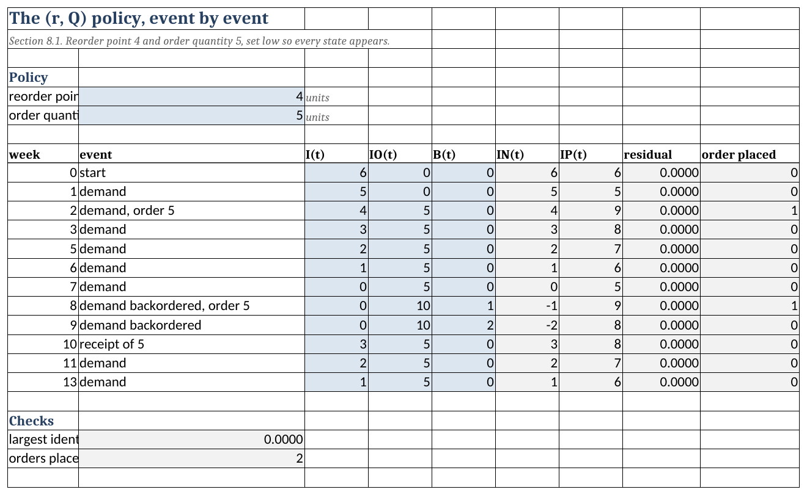
Ledger sheet. The three blue columns are the only ones typed. The net inventory, the position and the residual are formulas, and the residual is the position less on-hand plus on-order less backorders, so it reads zero on every row. Notice week 7: the shelf is empty, the position is 5, and the order flag is 0. A rule watching the shelf would order there, and the sheet shows why it must not.
Notice how the sheet counts orders. It does not search the event text. An order is placed exactly when the units on order rise, so the flag is =IF(D10>D9,1,0) and the count is a sum down that column. Searching the description for the word “order” returns three orders on this ledger rather than two, because “backordered” contains it.
8.16.2 Evaluating a Policy
Evaluate is Section 8.5. The upper block holds the item and the policy, and the lower block holds the lead time demand distribution and its loss functions.
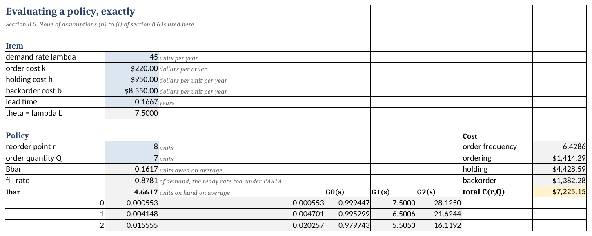
Evaluate sheet, rows 1 to 20. The reorder point and the order quantity are the only policy inputs. Everything in the right-hand cost block, and the three measures beneath the policy, moves when either is changed. Notice that the total reads $7,225.15, which is the optimum Example 8.7 finds, because the sheet ships holding that policy.
The loss block is the part to read, because it needs no function Excel does not already have. \(G\) comes from POISSON.DIST with the cumulative flag, and the two loss functions come from the recursions of Equation C.13, one short formula filled down:
\[ G^{1}(s) = G^{1}(s-1) - G^{0}(s-1), \qquad G^{2}(s) = G^{2}(s-1) - G^{1}(s) \]
started from \(G^{1}(0) = \theta\) and \(G^{2}(0) = \theta^{2}/2\).
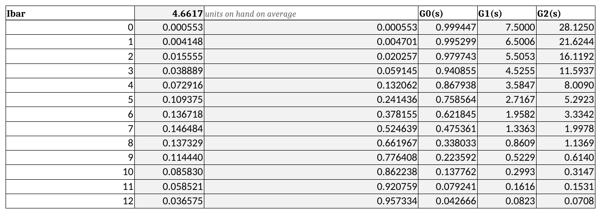
Evaluate sheet. One row per stock level, and each row reads the row above it. Notice the second order column. It steps down by \(G^{1}(s)\) and not by \(G^{1}(s-1)\), because \(G^{2}\) is the tail sum of \(G^{1}\) from \(s+1\) upward.
Equation 8.18 and Equation 8.19 then read out of that block by position. The expected backorder level is
=(INDEX($F$18:$F$58,$B$13+1)-INDEX($F$18:$F$58,$B$13+$B$14+1))/B14which is \(\tfrac{1}{Q}[G^{2}(r) - G^{2}(r+Q)]\) with the offsets that turn a stock level into a row. Change \(r\) or \(Q\) and every figure moves; the block below never does. That is the separation of the evaluator from the optimizer that Table 3.4 settled in Section 3.10, and here it is what makes a sensitivity study a matter of typing a number.
8.16.3 The Algorithm
Optimize is Algorithm Optimize_rq of Algorithm 8.1. A worksheet cannot loop, and it does not need to.
The input is one column. Equation 8.35 evaluated at every base-stock level, which is Table 8.18 as a range rather than a table.
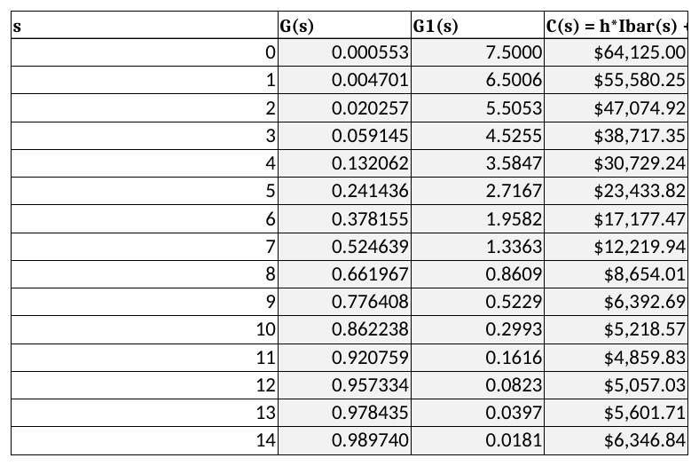
Optimize sheet. This is Table 8.18 with more rows. It falls, turns once, and rises, which is the convexity of Equation 8.37 made visible, and it is the only property the algorithm needs. \(S^{*}\) above it is a MATCH of the cost ratio against the distribution function.
The algorithm below it runs at most \(Q^{*}\) times, so the sheet lays out one row per step and each row computes the next state from the row above. Three formulas carry it. The latch,
=OR(G61,MIN(E61,F61)>=D61)is true once the stopping test has fired and stays true, and the other two defer to it:
Q =IF(G62,B61,B61+1)
r =IF(G62,C61,IF(E61<=F61,C61-1,C61))
C* =IF(G62,D61,D61-(D61-MIN(E61,F61))/B62)The third is Equation 8.45. Because the latch freezes everything, every row after termination repeats the answer and the last row is always the result, whatever the data. No macros, no iterative calculation setting, no circular reference.
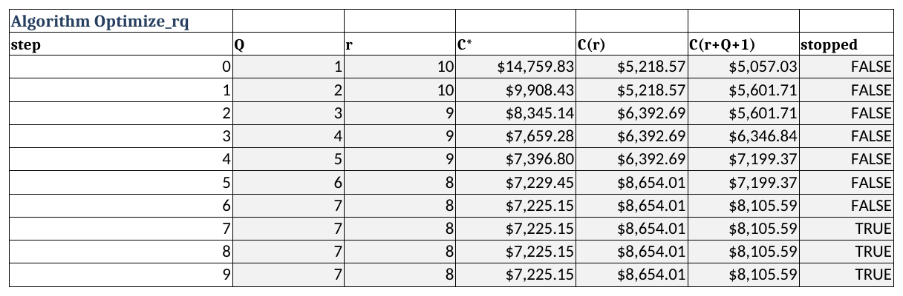
Optimize sheet. This is Table 8.19 as a range a reader can edit. Read the reorder point column downward: 10, 10, 9, 9, 9, 8, 8. It falls as the batch grows and never by more than one per step, which is the property that makes the loop finite. Step 7 is where the stopped column turns TRUE, and every row below it repeats step 6’s answer rather than drifting.
The sheet also runs the two results of Section 8.9, and it runs them as tests rather than as displays.
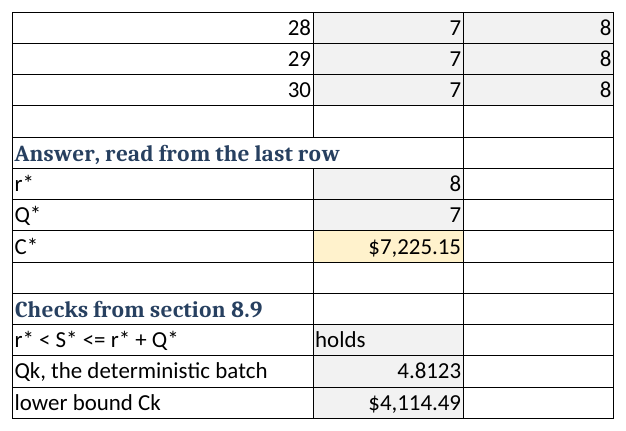
Optimize sheet. Equation 8.42 and Equation 8.43 are evaluated against the answer the rows above produced, and each prints “holds” or “FAILS”. Both are recomputed when a cost parameter changes.
8.16.4 The Approximation
Approximate is Section 8.6. The gamma of Equation 8.22 is built from the two moments at the top, and the iteration of Equation 8.24 is unrolled one pass per row in the same way the algorithm is.
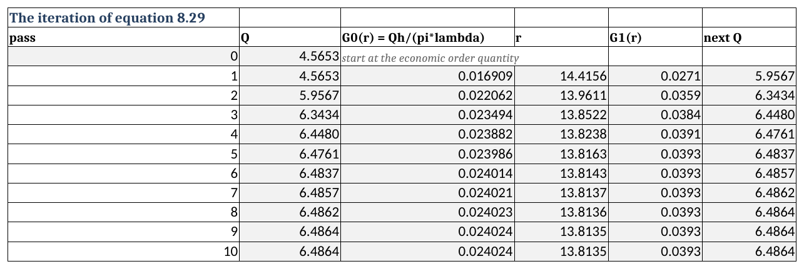
Approximate sheet. This is Table 8.8 on the transformer’s numbers. Each row carries the previous row’s order quantity into the stockout probability of Equation 8.24, inverts the gamma for a reorder point, and returns a new order quantity. Notice that the last decimal takes twenty-one passes to settle here against three on the connector.
The gamma’s first order loss function is Table C.5, \(G^{1}(x) = \beta[(\alpha - x/\beta)G^{0}(x) + xg(x)]\), which on the sheet is
=$B$16*(($B$15-D21/$B$16)*(1-GAMMA.DIST(D21,$B$15,$B$16,TRUE))
+D21*GAMMA.DIST(D21,$B$15,$B$16,FALSE))GAMMA.DIST supplies \(g\) with its cumulative flag set to FALSE and \(G\) with it set to TRUE, and the rest is arithmetic.
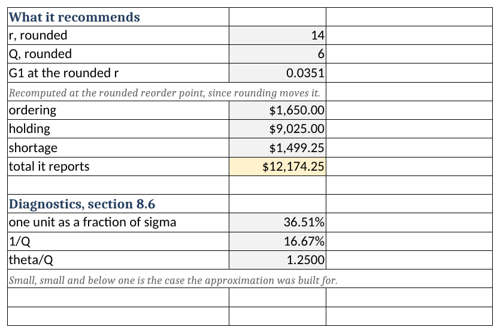
Approximate sheet. Notice that the loss function is recomputed at the rounded reorder point rather than carried down from the iteration, because rounding \(r\) moves it. The three diagnostics of Table 8.12 sit below the cost.
8.16.5 Service Levels
Service is Section 8.7. Both targets sit above the loss block and read out of it, the Type 1 target with MATCH against the distribution function and the Type 2 target with a COUNTIF of the loss function above its threshold.
The constrained program of Equation 8.30 is laid out rather than solved, one row per order quantity, and the reason is Table 8.14.
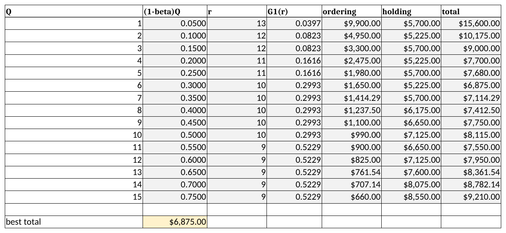
Service sheet. This is Table 8.14 with more rows. Read the total column downward: it falls to a minimum, climbs for four rows, and then falls again. Notice the reorder point column beside it, which drops a whole unit where the total turns, because a larger order quantity slackens the constraint of Equation 8.30. A search that stopped at the first local minimum would stop in the wrong place.
8.16.6 Reviewing on a Calendar
Periodic is Section 8.13. The item block is the transformer’s, and the review block beneath it holds the interval \(R\) and the order-up-to level \(S\) as the two inputs, with the protection interval, the mean exposure \(\lambda(L + R/2)\), the safety stock and the cycle stock as formulas below them. Notice the label beside the mean exposure. It says the cell is not \(\lambda\tau\), which is the exposure at the worst instant of the cycle, and that distinction is Equation 8.63 against Equation 8.58.
The loss block needs three Poisson means where the other sheets need one, because Equation 8.67 averages the base-stock measures over the review interval from three points: the start of the interval, its middle and its end. Nine columns carry the distribution function and the two loss functions at each of the three means, and two more combine them with Simpson’s weights of one, four and one into \(\bar{G}\) and \(\bar{G}^{1}\). The on-hand and cost columns read the combined functions, so every row of the cost column is Equation 8.68 at one level, and the four measures at the typed level are read out of the block by INDEX.
The level and the interval are chosen at the bottom. MATCH reads \(S^{*}\) of Equation 8.69 off \(\bar{G}\) against the critical ratio, and the caution beside it, that the level must be read off the averaged function and not off the column at \(\tau\), is the error Section 8.13.3 works through. The economic review interval of Equation 8.71 sits below it. Set \(R\) small and the level returns to the base-stock answer of Section 8.4, which is the check to run before trusting the sheet with an interval of your own.
8.16.7 Demand in Lots
Lumpy is Section 8.11. Lead time demand is compound Poisson, which is a sum of a random number of lot sizes.
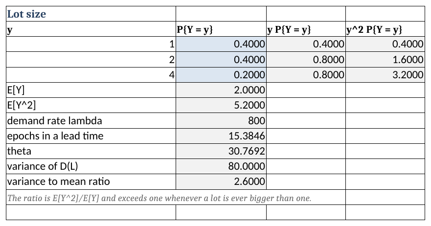
Lumpy sheet. The lot sizes and their probabilities are the only inputs, and the first two moments follow. The variance to mean ratio is the diagnostic of Equation 8.49, and it is 2.6 here, which is what sends this item to the negative binomial rather than the Poisson.
It needs one column. Panjer’s recursion builds the mass function upward, each value from the values below it:
\[ g(0) = e^{-\nu}, \qquad g(x) = \frac{\nu}{x}\sum_{y \le x} y\,P\{Y = y\}\,g(x-y) \]
where \(\nu = \lambda_{e}L\) is the expected number of demand epochs in a lead time. The sum has one term per distinct lot size, three on this item, so each cell reaches three cells up its own column and nothing else.
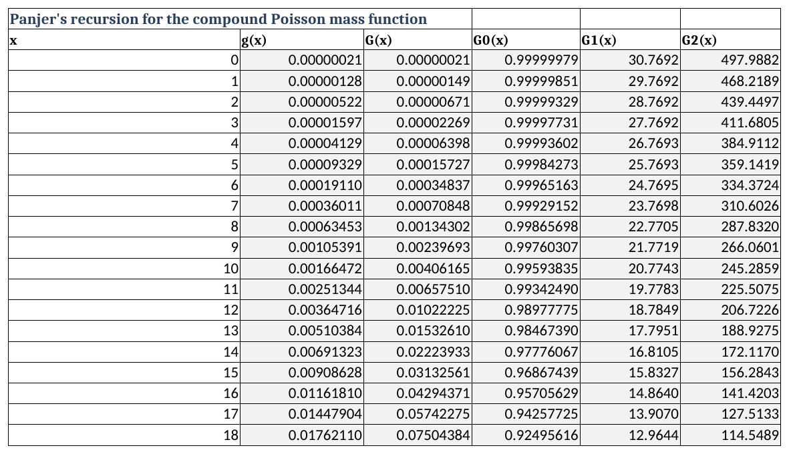
Lumpy sheet. One row per unit of demand, and the mass column is the only thing computed; the four columns to its right are the same accumulations the Evaluate sheet uses. The two checks below are the reason to trust it. Neither is imposed: the mass sums to one and the mean it implies returns \(\theta\), and both come out of the recursion rather than being forced on it.
8.16.8 Using the Sheets on Your Own Item
Every sheet carries its own copy of the item, in cells B5 through B9, and the copies are not linked. Pointing the workbook at a new item means typing it into each sheet you intend to use, and a policy that disagrees between two sheets is almost always one item entered twice and changed once.
Example 8.12 (Reading the Evaluate and Optimize sheets) The workbook ships holding the transformer of Example 8.1, so the first use of it is to confirm that it says what the chapter says.
The input block. On Evaluate, cells B5 to B9 hold \(\lambda = 45\) a year, \(k = \$220\), \(h = \$950\) per unit per year, \(b = \$8{,}550\) per unit per year and \(L = 0.1667\) years. B10 is the only derived input, \(\theta = \lambda L = 7.5\) units, and everything below it reads B10 and not B5 or B9.
The policy block. B13 and B14 hold \(r = 8\) and \(Q = 7\). These two cells are the only ones a reader types.
The three measures. B15, B16 and B17 return
\[ \bar{B} = 0.1617 \text{ units}, \qquad \overline{\mathit{FR}} = 0.8781, \qquad \bar{I} = 4.6617 \text{ units} \]
The check, by hand. Read \(G^{2}(8) = 1.1369\) and \(G^{2}(15) = 0.0052\) from the \(\lambda = 7.5\) column of Table D.5. Then Equation 8.18 gives
\[ \bar{B} = \frac{1.1369 - 0.0052}{7} = \frac{1.1317}{7} = 0.1617 \text{ units} \]
which is B15. That check is worth performing once on any sheet you did not build, because it is the whole of Equation 8.18 in two table lookups.
The cost block. H13 to H17 return an order frequency of 6.4286 a year and
\[ \underbrace{\$1{,}414.29}_{\text{ordering}} + \underbrace{\$4{,}428.59}_{\text{holding}} + \underbrace{\$1{,}382.28}_{\text{backorder}} = \$7{,}225.15 \text{ a year} \]
Typing a different policy. Enter \(r = 9\) and \(Q = 5\) into B13 and B14. The sheet returns \(\bar{B} = 0.1202\), \(\overline{\mathit{FR}} = 0.8990\), \(\bar{I} = 4.6202\) and a total of $7,396.80, which is the chosen row of Table 8.5. Restore \((8, 7)\) before going on.
Now a real question. Purchasing believes it can bring the transformer’s lead time down from two months to one by ordering against a framework agreement, and wants to know what that is worth. One cell answers it. Set B9 to \(1/12 = 0.0833\) years on the Optimize sheet and read the answer block:
\[ r^{*} = 4, \qquad Q^{*} = 6, \qquad C^{*} = \$6{,}104.16 \text{ a year} \]
and both checks in B99 and B103 still print “holds”. Set B9 the same way on Evaluate, enter \((4, 6)\), and the cost block confirms the figure from the other direction: $1,650.00 ordering, $3,651.67 holding and $802.49 backorder.
What it is worth. The saving is \(7{,}225.15 - 6{,}104.16 = \$1{,}120.99\) a year, which is 15.5% of what the item costs to carry now. Notice where it comes from. The holding cost falls by $777 because \(\theta\) halves and the reorder point follows it down, and the backorder cost falls by $580 because the same policy now covers a shorter exposure. The ordering cost rises by $236, because the optimal batch drops from seven to six. Thus, a shorter lead time is not simply less of everything, and a reader who priced it by scaling the current cost would have missed a term that runs the other way.
8.16.9 What the Worksheet Cannot Do
Two sections of this chapter have no sheet, and both for the same kind of reason.
The \((s,S)\) policy of Section 8.12. Its inventory position is not uniform, and its distribution is the stationary vector of a Markov chain. Finding one means iterating until nothing moves, and a worksheet cannot iterate without either a macro or the circular-reference setting, which is a macro by another name. The figures in Table 8.22 were computed by solving that chain directly. Notice that the approximation in that section is perfectly sheetable: it is the Evaluate sheet with \(r = s\) and \(Q = S - s\), and Equation 8.56 replacing the order frequency.
The multi-item search of Section 8.14. Two nested searches over a portfolio of thousands of items is a program, not a sheet, and Section 8.17 is where it belongs.
Two conventions hold across every sheet.
There are no macros. Every number is produced by a formula in the cell that holds it.
Lead time demand is never modeled with a normal distribution. See Section 8.6.2.
Section 8.17 turns the same models into a program, which is what an item whose optimal batch runs to thousands of units requires.
8.17 Designing the Software
Section 5.9 had six recipes to unify and Section 7.12 had a formula to organize. This chapter has an algorithm, so the shape of the design is closer to the first. What makes it worth the walk is that the two hardest decisions here concern where a convention lives and how a fast search is kept honest, not which classes exist.
8.17.1 What the Software Must Do
Reading back over the chapter, we find that the software has to
- hold a lead time demand distribution and evaluate its loss functions to the third order, including at arguments below zero,
- evaluate any \((r,Q)\) policy, reporting the measures of Section 8.2 separately, and the spread of the backorder level alongside its mean,
- bound the answer before any search runs, as Section 8.9 does,
- return the optimal integer \((r,Q)\),
- do that in reasonable time on an item whose optimal batch is in the thousands, and
- accept a service target in place of a shortage cost.
Notice that requirement 1 reaches one order higher than the measures themselves do. Equation 8.18 needs \(G^{2}\) and Equation 8.21 needs \(G^{3}\), and the KSL supplies loss functions to the second order only, so the third is the one piece of distribution machinery this chapter has to build rather than borrow. Section C.3.6 gives the forms.
Requirement 5 is the one the worksheet of Section 8.16 cannot meet. That sheet unrolls one row per step of Algorithm 8.1, so it answers any item whose optimal batch fits in the rows laid down. An item whose batch is 2,842 does not fit, and that is the reason for writing a program at all.
8.17.2 Finding the Nouns
Underline the nouns in the requirements and four survive.
A lead time demand is a distribution with a quantile and two loss functions. Notice that this is not a new class but LossFunctionDistributionIfc of Section C.3.9, which the KSL already provides for every family Section 8.3 selects among, and the design’s first decision is not to reimplement it. What the library does not provide is the one thing requirement 1 names: \(G^{1}\) and \(G^{2}\) below zero. A wrapper adds those and nothing else.
An item is \(\lambda\), \(k\), \(h\), \(b\) and a lead time demand. It owns every formula in Section 8.2 and Section 8.5, which means it owns the cost of any policy, optimal or not.
A policy is a reorder point and an order quantity, and it is a pair of integers with a name.
An optimizer reads an item and returns a policy. It is the only thing in the chapter that searches.
Two candidate nouns fail, and each fails instructively.
Base-stock model looks like a class. Section 8.4 is a section of its own, it has its own cost function and its own optimality condition, and a reader who met it first would expect an object. It fails because Equation 8.39 makes it literal that the base-stock cost is the \((r,Q)\) cost at \(Q = 1\). In the code baseStockCost(s) is one line, and the line is the general window evaluated at a width of one unit. A second class would be a second implementation of an identity the chapter proves.
Service level also looks like a class, and it is the thing practitioners actually talk about. It fails for the reason Section 8.7.6 gives: a target is not an alternative to a shortage cost, it is a shortage cost stated without saying so. Thus, it belongs in the construction of an item, where Equation 8.33 converts it to a \(b\) that everything downstream can see and argue with. Making it a class would preserve the evasion the section exists to expose.
Figure 8.12 illustrates the four and how they stand to one another.
8.17.3 The Window Is the Unit of Work
The design’s first real content is a decision about what a single step costs.
Equation 8.39 says a policy’s cost is \(k\lambda/Q\) plus the average of \(Q\) consecutive base-stock costs. Written that way it invites a loop, and a loop makes every policy cost \(Q\) evaluations of the lead time demand distribution. The search then costs \(Q\) times whatever it costs to walk, and the items that need a program are exactly the items where \(Q\) is large.
Both sums have closed forms, and the chapter has already given them. Summing Equation 8.20 over the window is arithmetic, and summing Equation 8.18 telescopes by Equation C.10. Thus, one method replaces the loop:
fun windowTotal(r: Int, q: Int): Double {
requirePolicy(r, q)
val width = q.toDouble()
val shortage = leadTimeDemand.lossSecond(r.toDouble()) -
leadTimeDemand.lossSecond((r + q).toDouble())
return fixedCostRate +
holdingCost * width * (expectedPosition(r, q) - theta) +
(holdingCost + backorderCost) * shortage
}Notice that q appears in the arithmetic and not in a loop. A step of one thousand costs what a step of one costs, and that single fact is what makes the search of Section 8.10.3 worth writing. A step size that is free can double.
8.17.4 Two Searches, One Answer
The design’s second real content is that the optimizer exposes two methods and not one.
optimizeFromUnitBatch is Algorithm 8.1 as printed: start at \(Q = 1\), add the cheaper neighbor, stop when it is no longer below the average. It is exact by the argument of Section 8.10.1 and its loop runs \(Q^{*}\) times. optimize is the same algorithm warm started, searched in both directions, and stepped by doubling.
The doubling is fast and, on its own, not exact. A step that commits on one edge of the window can build a window skewed to one side. It then carries \(Q\) past the optimum to a value that is still cheaper than where it started, and a search that only grows \(Q\) cannot walk back. optimize therefore finishes every doubling search with an exact per-unit search in both directions from wherever the doubling left it.
That is a claim, and a claim of that kind belongs in a test rather than a comment:
for ((name, model) in items()) {
val exact = RQOptimizer(model).optimizeFromUnitBatch()
val fast = RQOptimizer(model).optimize()
assertEquals(exact.orderQuantity, fast.orderQuantity, "$name: Q")
assertEquals(exact.reorderPoint, fast.reorderPoint, "$name: r")
assertEquals(exact.cost, fast.cost, 1e-6, "$name: cost")
}Keeping the slow method is the point. It is the thing the fast one is checked against, and a reader who distrusts the doubling can run it. On the items of Table 8.30 the two agree everywhere, and the cost of agreeing is visible: 74 evaluations against 5,684 on an item whose optimal batch is 2,842.
| Item | \(r^{*}\) | \(Q^{*}\) | Algorithm 8.1 | Warm started |
|---|---|---|---|---|
| Transformer | 8 | 7 | 14 | 19 |
| Mid volume | 196 | 295 | 590 | 75 |
| High volume | 1,195 | 2,842 | 5,684 | 74 |
8.17.5 Where the Conventions Live
Two places in this chapter have a discrete form and a continuous one, and both are easy to write wrongly.
Equation 8.16 puts the inventory position on the integers \(r+1\) through \(r+Q\), whose mean is \(\tfrac{1}{2}(Q+1) + r\). A continuous family puts it on the interval, whose mean is \(Q/2 + r\). Likewise Equation C.10 defines \(G^{2}\) with \((X - b - 1)\) when \(X\) is discrete and with a square when it is continuous, so the two extensions below zero differ.
Each belongs in exactly one method. The position is one method that asks the distribution which kind it is; the loss function extension is one method that does the same. Everything else in the code, including the cost, the measures and both searches, calls those and never restates the rule. Write a convention out at each place it is used and one of those places will eventually disagree with the others. Half a unit of stock is \(h/2\) per unit time on every policy the software will ever report, and nothing about the answer looks wrong when it is missing.
8.17.6 Running the Chapter’s Examples
The code is in code/, package inventory.continuousreview, and four lines solve an item.
Example 8.13 (The transformer in code, and an item the worksheet cannot reach) Building the item. The constructor takes the four cost and demand parameters and a lead time demand distribution. LeadTimeDemand.matched carries out step 2 of Section 8.3 rather than leaving the reader to choose a family by hand, and holdingCostFrom applies the storeroom’s carrying charge to a unit cost the way Section 1.4.4 does.
val transformer = RQModel(
demandRate = 45.0,
orderCost = 220.0,
holdingCost = RQModel.holdingCostFrom(carryingCharge = 0.25, unitCost = 3800.0),
backorderCost = 8550.0,
leadTimeDemand = LeadTimeDemand.matched(mean = 7.5, variance = 7.5),
)
println(transformer.bounds())
val answer = RQOptimizer(transformer).optimize()
println(answer)
println(transformer.evaluate(answer.policy))bounds: Q in [5, 11], S* = 11 costing 4859.83, C* in [4114.49, 8823.14]
(r = 8, Q = 7) costing 7225.15, found by warm start in 19 window evaluations
policy (r = 8, Q = 7)
order frequency 6.4286 orders per unit time
expected backorders 0.1617 units
ready rate 0.8781
fill rate 0.8781
expected on hand 4.6617 units
ordering 1414.29 per unit time
holding 4428.59 per unit time
backorder 1382.28 per unit time
total 7225.15 per unit timeEvery figure is the Evaluate sheet’s, to the cent. Notice the order of the three calls. bounds is asked before the search runs and prints what the answer must satisfy, which is Section 8.9 used the way that section recommends: \(Q^{*}\) must fall in \([5, 11]\) and \(C^{*}\) between $4,114.49 and $8,823.14, and both hold. The solution line also reports what the search cost, which is 19 evaluations of Equation 8.39.
The lead time question of Example 8.12. Changing the mean of the lead time demand answers it, and the program agrees with the worksheet:
val shorter = transformer.copy(
leadTimeDemand = LeadTimeDemand.matched(mean = 3.75, variance = 3.75)
)
println(shorter.bounds())
println(RQOptimizer(shorter).optimize())bounds: Q in [5, 9], S* = 6 costing 3529.19, C* in [4114.49, 6883.92]
(r = 4, Q = 6) costing 6104.16, found by warm start in 16 window evaluationsNow the item the worksheet cannot take. The storeroom’s ground rod moves \(\lambda = 2{,}400\) a year at \(c = \$14\), so \(h = \$3.50\), with \(k = \$41.25\), the shared backorder cost of $287.50 from Section 8.14, and a two week lead time.
val rod = RQModel(
demandRate = 2400.0,
orderCost = 41.25,
holdingCost = RQModel.holdingCostFrom(carryingCharge = 0.25, unitCost = 14.0),
backorderCost = 287.50,
leadTimeDemand = LeadTimeDemand.matched(mean = 2400.0 / 26.0, variance = 2400.0 / 26.0),
)
println(rod.bounds())
println(RQOptimizer(rod).optimize())
println("Algorithm Optimize_rq from a batch of one takes %d steps"
.format(RQOptimizer(rod).optimizeFromUnitBatch().orderQuantity - 1))bounds: Q in [239, 265], S* = 115 costing 90.83, C* in [827.44, 881.79]
(r = 94, Q = 244) costing 859.94, found by jump search in 65 window evaluations
Algorithm Optimize_rq from a batch of one takes 243 stepsRead the last two lines together. The Optimize sheet lays down thirty steps, and this item needs 243, so the worksheet cannot reach the answer and Section 8.16.9 is where that boundary was drawn. The program reaches it in 65 window evaluations, which is fewer steps than the worksheet lays down and a quarter of what the printed algorithm would take. Notice the method the solution reports: jump search, because \(Q^{*}\) is large enough for Section 8.17.4 to dispatch to it.
The same check as before. \(94 < 115 \le 338\) satisfies Equation 8.42 and $859.94 lies inside $827.44 to $881.79, so the two tests of Section 8.9 pass on an answer no worksheet produced.
8.18 Summary
The policy is exposed to exactly one random quantity. Demand that arrives while stock is on the shelf is met from the shelf and costs nothing to have been uncertain about. Only demand arriving during a replenishment lead time can find the shelf empty, so every measure and every cost in this chapter is a functional of the distribution of \(D(L)\) and of nothing else. Thus, two systems with different demand patterns and different lead times perform identically under the same policy whenever their lead time demand distributions coincide. The modeling effort belongs on \(D(L)\) and not on the formula built over it. Section 8.13 showed how far that carries: removing continuous review does not overturn the claim, it lengthens the interval the demand is taken over.
The inventory position is what the policy controls and the net inventory is what it costs. Equation 8.17 separates the two, and Equation 8.16 says the position is uniform over the band \(r+1\) through \(r+Q\) and independent of the lead time demand. That one fact carries Section 8.5 entire: every measure of a general batch size is a base-stock measure averaged over the band, and every such average telescopes into a difference of two loss functions.
Two moments do not determine a distribution, and the gap is where the work is. Table 8.3 gives the mean and variance of lead time demand for any combination of random demand and random lead time. The three cases it prints are one formula with terms switched off. A family still has to be chosen, and the variance to mean ratio of Equation C.1 chooses it. The normal is not among the candidates. Lead time demand is a non-negative count, the approximation is worst where items are slow-moving and expensive, and Rossetti and Ünlü (2011) measures what assuming otherwise costs.
One-for-one replenishment is the general model at \(Q = 1\), and its answer is the newsvendor’s. The ordering cost drops out because an order is placed at every demand whatever the level is, so \(k\) cannot affect which level is best. What remains trades one unit too many against one unit too few, and \(S^{*}\) is the smallest level whose distribution function reaches \(b/(b+h)\). Chapter 7 solved a problem with one period and no future, and this chapter solves one with an infinite horizon and a permanent stock. Both reach the same rule, and that is not a coincidence. In a one-for-one system the same trade is made afresh at every demand.
The classical approximation is wrong in two directions at once. It drops the backorder term from the on-hand level, prices shortages per cycle, and fits a continuous family to a count. On the transformer those assumptions cost \(-3.98\%\), the continuous family costs \(+6.34\%\), and what is reported is \(+2.11\%\) high. A method that comes close because two errors offset has not been validated by coming close, and nothing guarantees the offset on the next item. Section 8.5 is exact and costs no more to compute.
A service target is a shortage cost stated without saying so. Setting a fill rate does not remove \(b\) from the model; it fixes \(b\) at whatever value would have produced the same policy, and Equation 8.32 recovers the number. On the transformer a 95% fill rate implies $919 per unit short against an emergency purchase that costs the utility about $5,700. Thus, the target is not over-cautious, which is the usual accusation. It is holding far too little, and the useful question about any service level is what shortage cost would make it optimal.
The cost is an average of a convex sequence, and that is what makes the problem easy. By Equation 8.39 an \((r,Q)\) policy costs \(k\lambda/Q\) plus the average of \(Q\) consecutive base-stock costs. The best \(r\) for a given \(Q\) therefore takes the \(Q\) smallest values of \(C(s)\), and convexity puts those next to one another. Adding one more value lowers the average exactly when the value added is below it, which is a stopping rule rather than a convergence criterion. Thus, Algorithm 8.1 returns the exact integer optimum in a finite number of steps, with no search in two dimensions, no derivative, and nothing to converge.
A great deal about the answer is known before it is computed. The optimal band straddles the optimal base-stock level: \(r^{*} < S^{*} \le r^{*} + Q^{*}\), and the optimal cost lies between the deterministic cost and the two reference costs added in quadrature. Both are cheap, and both are checks you can run on an answer produced by software you did not write. Both also say that everything the deterministic chapters established about what drives performance continues to hold once demand is random.
Lumpiness changes the distribution and not the model. Demand arriving in lots makes lead time demand compound Poisson, raises the variance to mean ratio, and separates the fill rate from the ready rate. It does not change a single formula in Section 8.5, because those formulas never asked how the demand arrived. The \((s,S)\) policy needs one correction and only one: the undershoot below \(s\), without which the approximation is biased in a direction that flatters the policy.
One service target does not mean one level of care. Applying the same fill rate across a storeroom sets a different implied shortage cost on every item, because the implied cost depends on the item’s own unit cost and demand rate. Before raising service on everything, find out which items are carrying the average, because that is cheap to act on and almost never acted on.
Periodic review changes the interval and nothing else. Under an \((R, S)\) policy the stock committed at a review must last until the order after next arrives, so the exposure is the protection interval \(\tau = R + L\) rather than the lead time alone. Equation 8.59 is then Equation 8.16’s dual: one policy randomizes the position over \(Q\) levels, the other randomizes the exposure over \(R\) of time, and both are the base-stock model averaged over a uniform quantity. Thus, the four measures, the critical ratio and the newsvendor argument all survive with the averaged distribution \(\bar{G}\) in place of \(G\). The one new quantity is the \(\lambda R/2\) of cycle stock the calendar creates, which is the EOQ’s \(Q/2\) in different units, and it is what makes Equation 8.71 set the review interval to the EOQ time supply.
Not watching an item costs money, and the amount is computable. On the transformer it is $970 a year, or 13.4%, at the same fill rate. The premium is not all safety stock: a longer exposure raises the safety stock, but the shorter review interval lowers the cycle stock, and the difference lands across all three cost terms. Thus, the choice between continuous and periodic review is a question about what the record-keeping discipline costs, not a question about the item.
Table 8.31 collects the notation, which Appendix A repeats alongside the rest of the book’s.
| Symbol | Meaning |
|---|---|
| \(r\), \(Q\) | Reorder point and order quantity, the two decisions |
| \(D(L)\) | Demand over a replenishment lead time, the chapter’s one random quantity |
| \(\theta\) | \(E[D(L)]\), the mean lead time demand |
| \(w\) | \(b/(b+h)\), the critical ratio the base-stock level is read against |
| \(S\), \(S^{*}\) | Base-stock level, and the optimal one |
| \(C(s)\) | Cost rate of a base-stock policy at level \(s\), holding plus backorder |
| \(s\), \(S\) | Reorder point and order-up-to level of an \((s,S)\) policy |
| \(U\) | Undershoot, the amount by which a demand carries the position below \(s\) |
| \(Q_{k}\), \(C_{k}\) | Order quantity and cost of the deterministic model with backorders |
| \(C_{\infty}\) | \(\sqrt{bh}\,\sigma\), a reference cost built from lead time demand alone |
| \(Y\), \(\lambda_{e}\) | Size of a demand lot, and the rate at which lots arrive |
| \(t_{F}\), \(\hat{D}_{t}\) | Basic forecast period, and the forecast of demand in one |
| \(\mathit{MAD}_{t}\) | Smoothed mean absolute deviation of the forecast error |
| \(\eta\) | Exponent carrying a period standard deviation over a lead time |
| \(R\) | Review interval, the time between consecutive looks at the position |
| \(\tau\) | \(R + L\), the protection interval a periodic policy must cover |
| \(\bar{G}\), \(\bar{G}^{1}\) | Distribution and first order loss function of \(D(L+U)\), averaged over a review interval |
Chapter 9 keeps the randomness and removes the single location. Stock is held at more than one place, a retailer is supplied by a warehouse that is itself supplied from outside, and the lead time one location faces is no longer a property of its supplier but a consequence of how much stock that supplier chose to hold. Thus, the \(D(L)\) this chapter took as given becomes something the system decides, and that is the one change from which the rest of that chapter follows.
8.19 Exercises
Unless an exercise says otherwise, use the conventions of Section 1.8. Report reorder points and order quantities as whole units and state the unrounded value alongside. Take the storeroom’s carrying charge as 0.25 a year throughout, so \(h = 0.25c\), and take item data from Table 4.5. Where an exercise names a lead time, it is the supplier’s quoted lead time and is constant unless the exercise says it is not.
8.19.1 Working the Model by Hand
Exercise 8.1 The utility will not name a backorder cost for the pad-mount transformer and sets a fill rate target instead. Take \(\lambda = 45\) a year, \(k = \$220\), \(c = \$3{,}800\) and a constant two month lead time, so \(\theta = 7.5\) units and \(D(L)\) is Poisson.
Work entirely from the \(\lambda = 7.5\) column of Table D.3, Table D.4 and Table D.5.
- Compute \(h\) and the economic order quantity of Equation 3.17, and round it up to the next whole unit.
- At that \(Q\), find the smallest \(r\) meeting a fill rate of 98% using Equation 8.19. Show the column of \(G^{1}\) values you walked.
- Report \(\bar{B}\) and \(\bar{I}\) at your policy, and verify \(\bar{I}\) against Equation 8.20 by the arithmetic check of Example 8.4.
- Use Equation 8.32 to recover the shortage cost your target implies. Compare it with the $5,700 of Example 8.6 and say which way the target errs.
Exercise 8.2 Continue with the policy you found in Exercise 8.1.
- Compute the exact expected backorder level from Equation 8.18.
- The holding term of Equation 8.23 prices an average on-hand level of \(Q/2 + r - \theta\). Compute that figure and compare it with the exact \(\bar{I}\) of part (a), reporting the difference in units and as a percentage of the exact level.
- Split that difference into its two parts, and say which assumption of Section 8.6.1 each one comes from. One part is the same size whatever the item is; the other depends on the policy. Say which is which, and which of the two would grow if the backorder cost were cut in half.
Exercise 8.3 The transformer’s supplier delivers in two months on average, but the storeroom’s receiving records show a standard deviation of three weeks about that mean. Demand remains Poisson at 45 a year.
- Using case 3 of Table 8.3, compute \(E[D(L)]\) and \(\mathit{Var}[D(L)]\). Work in years and show the unit conversion as a dimensional chain.
- Report what fraction of the variance the supplier contributes, and compare it with the 65% of Example 8.2. Explain the direction of the change.
- Compute the variance to mean ratio and say which family Equation C.1 selects. Match its moments.
- The purchasing department believes it can halve the standard deviation of the lead time by paying a $400 a year premium for a dedicated slot. Recompute the variance, and say what further information you would need before advising whether to pay it.
Exercise 8.4 The storeroom currently reviews the fuse cutout continuously and orders up to a level rather than ordering a fixed quantity, so its policy is \((s, S)\) rather than \((r, Q)\). Take the lot size distribution of Table 8.20, with \(\lambda_{e} = 400\) job lots a year and a two week lead time.
- Compute \(E[Y]\), \(E[Y^{2}]\) and the demand rate \(\lambda\) from Equation 8.47.
- Compute the equilibrium distribution of the undershoot from Equation 8.53 and report \(E[U]\) from Equation 8.54.
- The storeroom sets \(s = 40\) and \(S = 80\). Report the order frequency and the ordering cost rate from Equation 8.56, and then from the uncorrected \(\lambda/(S-s)\) that Section 8.12.2 warns against.
- State which of the two is biased and in which direction. The error is small on this item. Say what would have to change about Table 8.20 to make it large, and give a lot size distribution with the same mean of 2.0 units that raises \(E[U]\) to at least 1.5 units.
Exercise 8.5 The storeroom moves the transformer of Example 8.10 from a monthly review to a review every two months, and raises the order-up-to level from 13 to 15 to compensate. The lead time is unchanged at two months, and demand is unchanged at \(\lambda = 45\) a year, which is 3.75 a month.
Reviews now occur at the end of every even month. As in Example 8.10, an order placed at the review ending month \(t\) is received at the start of month \(t + 3\). At the end of month 0 the shelf holds 6 transformers, 5 are due in month 1, 4 are due in month 2, and nothing is owed. The monthly demands for months 1 through 10 are
\[ 3,\ 5,\ 2,\ 6,\ 4,\ 3,\ 7,\ 2,\ 4,\ 3 \]
which are the demands of Table 8.24, so that only the review interval and the level have changed.
- Report the protection interval from Equation 8.57, the expected demand over it, and the safety stock \(S - \lambda\tau\) that \(S = 15\) provides.
- Work the ledger for months 1 through 10, in the columns of Table 8.24. Note in a separate column which months carry a review.
- Verify \(\mathit{IP} = I + \mathit{IO} - B\) on every month in which all three terms are non-zero.
- Verify Equation 8.58 at each of the four reviews that can be checked within the ledger, by comparing 15 against the demand of the following four months.
- Table 8.24 was short in one month out of ten at \(S = 13\). This ledger is short in three at \(S = 15\). Using your answer to part (a), explain why raising the level by two units did not compensate for doubling the review interval, and state the level that would have restored the same safety stock.
Exercise 8.6 The utility’s demand for the transformer has grown to \(\lambda = 52\) units a year, which is one a week. The supplier now quotes a constant six week lead time, and the storeroom reviews the item every four weeks. Take \(k = \$220\) an order, \(c = \$3{,}800\) and \(b = \$8,550\) per unit per year, and take demand to be Poisson.
This exercise is worked entirely from Table D.3 and Table D.4. The calendar has been chosen so that every mean you need is a printed column.
- Report \(\tau\), and the three mean demands \(\lambda L\), \(\lambda(L + R/2)\) and \(\lambda\tau\) that Equation 8.67 calls for. Confirm that each is a column of the tables. Report \(\lambda R\) and the ordering cost rate from Equation 8.61.
- Using Equation 8.67 on the distribution function, compute \(\bar{G}(S)\) for \(S = 10, 11, 12, 13\), and apply Equation 8.69. Show the column you walked and state \(S^{*}\).
- At \(S^{*}\), compute \(\bar{B}\) from Equation 8.67, showing the three \(G^{1}\) values you read.
- Report \(\bar{I}\) from Equation 8.63, the fill rate from Equation 8.66, and the cost from Equation 8.68.
- Now read the critical ratio off the \(\lambda = 10\) column of Table D.3 instead, which is demand over the full protection interval. Report the level that rule returns and the cost of running it. State, in one sentence, which question that rule answers.
- Compute the review interval that Equation 8.71 recommends, in weeks, and say whether the storeroom’s four week calendar needs changing.
Exercise 8.7 Each part concerns Section 8.13. Answer in a sentence or two, and name the equation or table that settles it.
- True or false: under an \((R, S)\) policy the number of orders placed per year depends on the demand rate.
- True or false: doubling the review interval doubles the safety stock required to hold a given service level, all else equal.
- A planner reports that an item reviewed monthly with a two month lead time “carries three months of stock on average”. What has the planner confused, and what is the correct average exposure?
- Which of the following is the reason \(G^{1}_{\tau}(S)\) overstates the expected backorder level under an \((R, S)\) policy? Choose one and say why each of the others is wrong.
- It uses demand over the protection interval rather than over the lead time.
- It evaluates the backorder level at the worst instant of the review interval rather than averaging over the cycle.
- It ignores the undershoot.
- It assumes at most one order is outstanding.
- An analyst proposes to model a periodically reviewed item as an \((r, Q)\) system with \(Q = \lambda R\), arguing that the two order the same amount per cycle. Name the quantity that substitution gets right and the quantity it gets wrong, and say in which direction the error runs.
8.19.2 Using the Software
The code of Section 8.17 is in code/, package inventory.continuousreview. Report the code you wrote alongside each answer.
Exercise 8.8 The storeroom’s splice kit moves \(\lambda = 1{,}500\) a year at \(c = \$28\) and \(k = \$55\). The supplier quotes three weeks. The utility puts the backorder cost at $70 per unit per year, ten times the holding cost.
- Build the item with
LeadTimeDemand.matched. Report \(\theta\), the variance to mean ratio, and which family was selected. Say what would have had to be true of the data for a different family to be chosen. - Compute the economic order quantity of Equation 3.17 and round it. Holding that \(Q\) fixed, evaluate Equation 8.1 across \(r\) and report the table of Table 8.5 for the five reorder points either side of the best one.
- Now run
RQOptimizer.optimizeand report the optimal policy and its cost. Express the cost of your answer to part (b) as a percentage above it, and relate that percentage to Equation 3.22. - Compute the cost of the best one-for-one policy, including the ordering term that Section 8.4 set aside. Compare it with part (c) and say in one sentence why the comparison comes out so differently here than it does for the transformer in Table 8.6.
Exercise 8.9 Section 8.14 applies one backorder cost of $287.50 per unit per year across the whole storeroom. Take that figure, a two week lead time, and Poisson lead time demand, and consider the meter socket, the ground rod and the warning tape.
- For each item, report \(\theta\), the cost ratio \(w\), and the bounds of Section 8.9.
- Solve each item twice, with
optimizeFromUnitBatchand withoptimize. Confirm that the two agree on the policy and on the cost. - For each answer, verify Equation 8.42 and Equation 8.43 and report both as passing or failing.
- Report
windowEvaluationsfor both searches on all three items. Explain why the ratio between them grows with \(Q^{*}\), using the closed form of Section 8.17.3. - Construct an item on which
optimizecosts more evaluations thanoptimizeFromUnitBatch, and say what property of the item makes that happen.
Exercise 8.10 The storeroom’s smart meter moves \(\lambda = 1{,}200\) a year at \(c = \$95\) and \(k = \$110\), with a two week lead time and Poisson lead time demand. The utility will not name a backorder cost.
- For ready rate targets of 0.90, 0.95, 0.98 and 0.99, use
RQModel.fromReadyRateTargetto build the item and report the implied \(b\) in each case. - Solve each and report the policy, the cost, and the fill rate the policy actually achieves.
- The achieved fill rates fall short of the targets, and two separate things cause it. Set \(Q = 1\) and evaluate the base-stock policy at the level Equation 8.15 gives. The shortfall is already there. Compare Equation 8.15, which Equation 8.33 inverts, against Equation 8.13, and say why the two are read one unit apart on the same distribution function. Then report, for each of the four targets, how the achieved rate at the optimal \(Q\) compares with the rate at \(Q = 1\), and account for the fact that it does not move the same way every time.
- Report the cost of moving from a 0.90 target to a 0.99 target, as a dollar figure and as a percentage. Then report the implied \(b\) at each, and say which of the two numbers a manager should be shown.
Exercise 8.11 Continue with the item of Exercise 8.6: the transformer at \(\lambda = 52\) a year, a constant six week lead time, \(k = \$220\), \(h = \$950\) and \(b = \$8,550\). Build it with DemandOverInterval.poisson.
- Using
RQModelandRQOptimizer, find the best \((r, Q)\) policy under continuous review and report its cost, its fill rate, its safety stock \(r - \theta\) and its cycle stock \(\tfrac{1}{2}(Q+1)\). - Using
RSModel, find the best \((R, S)\) policy, searching \(R\) over the range from one week to sixteen weeks. Report \(R^{*}\), \(S^{*}\), the cost, the fill rate, the safety stock and the cycle stock. - Report the premium in part (b) over part (a), in dollars and as a percentage, and confirm that the two policies deliver comparable fill rates before you quote it.
- Decompose the premium across the three cost terms. State which of the two stock quantities rose, which fell, and why, referring to Equation 8.6 for the first and Equation 8.63 for the second.
- The storeroom actually reviews every four weeks. Report what that calendar costs against your answer to part (b), and say whether it is worth changing.
Exercise 8.12 The storeroom’s meter socket moves \(\lambda = 900\) a year at \(c = \$48\) and \(k = \$82.50\), with a constant two week lead time. Take the storeroom-wide backorder cost of $287.50 per unit per year from Section 8.14 and build the item with DemandOverInterval.poisson.
- Report \(h\), \(\theta\) over the lead time, the economic order quantity of Equation 3.17, and the review interval of Equation 8.71 in weeks. Confirm that the second is the first divided by the demand rate.
- For review intervals of one, two, four, six and eight weeks, report \(S^{*}\), the fill rate and the three cost terms. Present it as Table 8.27 is presented.
- Report the interval that minimizes cost to the nearest tenth of a week, and express the cost at the interval from part (a) as a percentage above it.
- At the best interval, verify Equation 8.63 by confirming that \(\bar{I}\) equals the safety stock plus \(\lambda R/2\) plus \(\bar{B}\).
- Confirm that
readyRateandfillRateagree at the best policy, then rebuild the item withDemandOverInterval.stationaryat a variance rate three times the demand rate and report both again. Explain the direction of the gap using Section 8.2.2.
8.19.3 Using the Workbook
Exercise 8.13 Open Chapter8Models.xlsx and work entirely within it.
- On the
Ledgersheet, confirm that the inventory position column never falls below \(r\) except in the instant before an order is placed, and say which column would have to change for Equation 8.17 to fail. - On the
Evaluatesheet, reproduce Table 8.5 by changing only the reorder point in B13. Report the five rows. - Verify the arithmetic check of Example 8.4 at \(r = 9\) by reading B15, B17 and B10, and confirm that B17 uses \(\tfrac{1}{2}(Q+1)\) and not \(Q/2\).
- Raise the demand rate in B5 from 45 to 300, leaving everything else alone. Report what the sheet now says for \(\bar{B}\), the fill rate and \(\bar{I}\). The answers are absurd rather than merely wrong. Diagnose why, naming the range the sheet is built over, and state the largest \(\theta\) you would trust it at.
Exercise 8.14 Continue in Chapter8Models.xlsx, on the Optimize sheet.
- Reproduce Table 8.19. Report the \(r\) column across the steps and confirm the property of Section 8.10.1 that it falls by at most one per step.
- Read the two checks in B99 and B103 and confirm both hold.
- Now change the item to a cheap one: set the holding cost in B7 to $18 and the backorder cost in B8 to $162, leaving \(\lambda\), \(k\) and the lead time alone so that \(\theta\) is still 7.5. Report \(r^{*}\), \(Q^{*}\) and \(C^{*}\) as the sheet gives them, and read B99 and B103 again.
- One of the two checks fails. Explain what the sheet has done wrong, using the number of steps the algorithm laid down against the \(Q^{*}\) this item needs.
- Find the true optimum for the item of part (c) by any means you like, and report how much the sheet’s answer costs above it. Then state the general lesson in one sentence: what the check of Equation 8.43 is for.
Exercise 8.15 Continue in Chapter8Models.xlsx, on the Service and Approximate sheets.
- On
Service, with both targets at 0.95 and \(Q = 5\), reproduce the first two rows of Table 8.13. Report both reorder points and say which target is the more demanding on this item. - Raise the Type 2 target in B14 until the Type 2 reorder point equals the Type 1 reorder point of part (a). Report the target at which that happens, and state what it means to say that a 95% cycle service level is worth that much fill rate on this item.
- On
Approximate, confirm the iteration settles at the policy of Example 8.6 and report the three cost terms it gives. - Read the three diagnostics in B57, B58 and B59 and say what each measures. The chapter says two should be small and one below one. Report which condition this item fails and by how much.
- Raising the demand rate alone will not fix the condition that fails. Show why, by writing \(\theta/Q\) in terms of \(\lambda\), \(k\), \(h\) and \(L\) with \(Q\) taken from Equation 3.17, and saying which way it moves as \(\lambda\) rises.
- Now enter the compression connector of Example 8.5 on the same sheet: \(\lambda = 6{,}000\), \(k = \$27.50\), \(h = \$0.85\), \(\pi = \$8.50\) and a two week lead time. Report the three diagnostics again and say, in one sentence, what kind of item the classical approximation is built for.
Exercise 8.16 Continue in Chapter8Models.xlsx, on the Periodic sheet. The review interval is in B13, the order-up-to level in B14, and the lead time in B9.
- Reproduce the cost column of Table 8.26 by reading N41 through N45, which are the levels 12 through 16. Confirm that B93 gives \(S^{*} = 14\). The costs will not match the chapter to the cent. Report the largest discrepancy across the five levels and say what causes it, naming the equation the sheet uses.
- The three means Simpson’s rule needs are in B23, B24 and B25. Report them, and report the three \(G^{1}\) values the sheet reads at \(S = 14\), which are D43, G43 and J43. Verify H23 against Equation 8.67 by hand.
- Confirm the decomposition of Equation 8.63 by reading the safety stock in B19, the cycle stock in B20 and \(\bar{B}\) in H23, and checking them against \(\bar{I}\) in H24.
- Set B13 to 0.001 years. Report \(S^{*}\) from B93 and compare it with the base-stock answer of Table 8.4. Then report the total cost in L27 and explain in one sentence why the level is right and the cost is useless.
- Set B13 back to one month, then work it up to 0.25, 0.5 and 1.0 years, reporting the level B93 gives and the sheet’s \(\bar{B}\) at it each time. The exact values, by fine quadrature, are 0.228690, 0.397945 and 0.370751 units at the levels the sheet selects. Report the percentage error at each, and account for its growth using the property of Simpson’s rule named in Section 8.13.2. At one of the four intervals the error is large enough to move the level itself: say which, and report both levels. State the longest review interval at which you would trust this sheet.